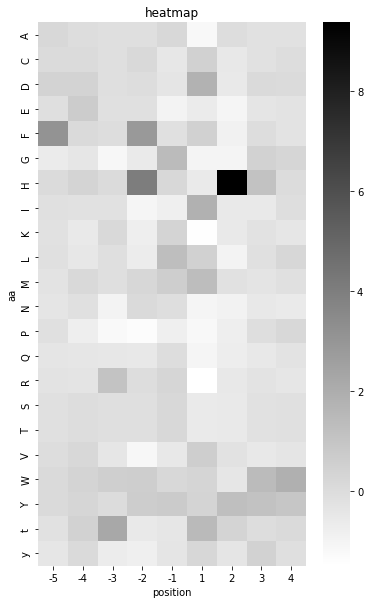

# essentials
from fastbook import *
from katlas.imports import *
from katlas.train import *
from katlas.dl import *
import seaborn as sns
# sklearn
from sklearn.neighbors import *
from sklearn.linear_model import *
from sklearn.tree import *
from sklearn.svm import *
from sklearn.ensemble import *
from sklearn.multioutput import MultiOutputRegressorDL/ML Training
Setup
Data
# T5 data
t5_kd = pd.read_parquet('train_data/combine_t5_kd.parquet').reset_index()
t5 = pd.read_parquet('train_data/combine_t5.parquet').reset_index()
# ESM data
esm_kd = pd.read_parquet('train_data/combine_esm_kd.parquet').reset_index()
esm = pd.read_parquet('train_data/combine_esm.parquet').reset_index()
# feature col
t5_col = t5.columns[t5.columns.str.startswith('T5_')]
esm_col = esm.columns[esm.columns.str.startswith('esm_')]
# target col
target_col = t5.columns[~t5.columns.isin(t5_col)][1:]t5_col,esm_col,target_col(Index(['T5_0', 'T5_1', 'T5_2', 'T5_3', 'T5_4', 'T5_5', 'T5_6', 'T5_7', 'T5_8',
'T5_9',
...
'T5_1014', 'T5_1015', 'T5_1016', 'T5_1017', 'T5_1018', 'T5_1019',
'T5_1020', 'T5_1021', 'T5_1022', 'T5_1023'],
dtype='object', length=1024),
Index(['esm_0', 'esm_1', 'esm_2', 'esm_3', 'esm_4', 'esm_5', 'esm_6', 'esm_7',
'esm_8', 'esm_9',
...
'esm_1270', 'esm_1271', 'esm_1272', 'esm_1273', 'esm_1274', 'esm_1275',
'esm_1276', 'esm_1277', 'esm_1278', 'esm_1279'],
dtype='object', length=1280),
Index(['-5P', '-5G', '-5A', '-5C', '-5S', '-5T', '-5V', '-5I', '-5L', '-5M',
...
'4Q', '4N', '4D', '4E', '4s', '4t', '4y', '0s', '0t', '0y'],
dtype='object', length=210))Kfold Split
source = pd.read_excel('train_data/combine_info_PSPA.xlsx').iloc[:,:2]
info = Data.get_kinase_info().query('pseudo !="1"')
info = source.merge(info,how='left')info[info.kinase.str.contains('MEK')]| kinase | source | ID_coral | uniprot | ID_HGNC | group | family | subfamily_coral | subfamily | in_ST_paper | in_Tyr_paper | in_cddm | pseudo | pspa_category_small | pspa_category_big | cddm_big | cddm_small | length | human_uniprot_sequence | kinasecom_domain | nucleus | cytosol | cytoskeleton | plasma membrane | mitochondrion | Golgi apparatus | endoplasmic reticulum | vesicle | centrosome | aggresome | main_location | |
|---|---|---|---|---|---|---|---|---|---|---|---|---|---|---|---|---|---|---|---|---|---|---|---|---|---|---|---|---|---|---|---|
| 183 | MEK1 | PSPA | MAP2K1 | Q02750 | MAP2K1 | STE | STE7 | None | STE7 | 1 | 0 | 1 | 0 | assorted | assorted | 2.0 | 12.0 | 393 | MPKKKPTPIQLNPAPDGSAVNGTSSAETNLEALQKKLEELELDEQQRKRLEAFLTQKQKVGELKDDDFEKISELGAGNGGVVFKVSHKPSGLVMARKLIHLEIKPAIRNQIIRELQVLHECNSPYIVGFYGAFYSDGEISICMEHMDGGSLDQVLKKAGRIPEQILGKVSIAVIKGLTYLREKHKIMHRDVKPSNILVNSRGEIKLCDFGVSGQLIDSMANSFVGTRSYMSPERLQGTHYSVQSDIWSMGLSLVEMAVGRYPIPPPDAKELELMFGCQVEGDAAETPPRPRTPGRPLSSYGMDSRPPMAIFELLDYIVNEPPPKLPSGVFSLEFQDFVNKCLIKNPAERADLKQLMVHAFIKRSDAEEVDFAGWLCSTIGLNQPSTPTHAAGV | FEKISELGAGNGGVVFKVSHKPSGLVMARKLIHLEIKPAIRNQIIRELQVLHECNSPYIVGFYGAFYSDGEISICMEHMDGGSLDQVLKKAGRIPEQILGKVSIAVIKGLTYLREKHKIMHRDVKPSNILVNSRGEIKLCDFGVSGQLIDSMANSFVGTRSYMSPERLQGTHYSVQSDIWSMGLSLVEMAVGRYPIPPPDAKELELMFGCQVEGDAAETPPRPRTPGRPLSSYGMDSRPPMAIFELLDYIVNEPPPKLPSGVFSLEFQDFVNKCLIKNPAERADLKQLMVHAFI | NaN | 7.0 | NaN | 3.0 | NaN | NaN | NaN | NaN | NaN | NaN | cytosol |
| 184 | MEK2 | PSPA | MAP2K2 | P36507 | MAP2K2 | STE | STE7 | None | STE7 | 1 | 0 | 1 | 0 | assorted | assorted | 2.0 | 12.0 | 95 | MLARRKPVLPALTINPTIAEGPSPTSEGASEANLVDLQKKLEELELDEQQKKRLEAFLTQKAKVGELKDDDFERISELGAGNGGVVTKVQHRPSGLIMARKLIHLEIKPAIRNQIIRELQVLHECNSPYIVGFYGAFYSDGEISICMEHMDGGSLDQVLKEAKRIPEEILGKVSIAVLRGLAYLREKHQIMHRDVKPSNILVNSRGEIKLCDFGVSGQLIDSMANSFVGTRSYMAPERLQGTHYSVQSDIWSMGLSLVELAVGRYPIPPPDAKELEAIFGRPVVDGEEGEPHSISPRPRPPGRPVSGHGMDSRPAMAIFELLDYIVNEPPPKLPNGVFTPDFQEFVNKCLIKNPAERADLKMLTNHTFIKRSEVEEVDFAGWLCKTLRLNQPGTPTRTAV | FERISELGAGNGGVVTKVQHRPSGLIMARKLIHLEIKPAIRNQIIRELQVLHECNSPYIVGFYGAFYSDGEISICMEHMDGGSLDQVLKEAKRIPEEILGKVSIAVLRGLAYLREKHQIMHRDVKPSNILVNSRGEIKLCDFGVSGQLIDSMANSFVGTRSYMAPERLQGTHYSVQSDIWSMGLSLVELAVGRYPIPPPDAKELEAIFGRPVVDGEEGEPHSISPRPRPPGRPVSGHGMDSRPAMAIFELLDYIVNEPPPKLPNGVFTPDFQEFVNKCLIKNPAERADLKMLTNHTFI | NaN | 7.0 | NaN | 3.0 | NaN | NaN | NaN | NaN | NaN | NaN | cytosol |
| 185 | MEK5 | PSPA | MAP2K5 | Q13163 | MAP2K5 | STE | STE7 | None | STE7 | 1 | 0 | 1 | 0 | MAP3K | MAP3K | 2.0 | 7.0 | 448 | MLWLALGPFPAMENQVLVIRIKIPNSGAVDWTVHSGPQLLFRDVLDVIGQVLPEATTTAFEYEDEDGDRITVRSDEEMKAMLSYYYSTVMEQQVNGQLIEPLQIFPRACKPPGERNIHGLKVNTRAGPSQHSSPAVSDSLPSNSLKKSSAELKKILANGQMNEQDIRYRDTLGHGNGGTVYKAYHVPSGKILAVKVILLDITLELQKQIMSELEILYKCDSSYIIGFYGAFFVENRISICTEFMDGGSLDVYRKMPEHVLGRIAVAVVKGLTYLWSLKILHRDVKPSNMLVNTRGQVKLCDFGVSTQLVNSIAKTYVGTNAYMAPERISGEQYGIHSDVWSLGISFMELALGRFPYPQIQKNQGSLMPLQLLQCIVDEDSPVLPVGEFSEPFVHFITQCMRKQPKERPAPEELMGHPFIVQFNDGNAAVVSMWVCRALEERRSQQGPP | IRYRDTLGHGNGGTVYKAYHVPSGKILAVKVILLDITLELQKQIMSELEILYKCDSSYIIGFYGAFFVENRISICTEFMDGGSLDVYRKMPEHVLGRIAVAVVKGLTYLWSLKILHRDVKPSNMLVNTRGQVKLCDFGVSTQLVNSIAKTYVGTNAYMAPERISGEQYGIHSDVWSLGISFMEIQKNQGSLMPLQLLQCIVDEDSPVLPVGEFSEPFVHFITQCMRKQPKERPAPEELMGHPFI | 3.0 | 6.0 | NaN | 1.0 | NaN | NaN | NaN | NaN | NaN | NaN | cytosol |
| 186 | MEKK1 | PSPA | MAP3K1 | Q13233 | MAP3K1 | STE | STE11 | None | STE11 | 1 | 0 | 1 | 0 | MAP3K | MAP3K | 2.0 | 9.0 | 339 | MAAAAGNRASSSGFPGARATSPEAGGGGGALKASSAPAAAAGLLREAGSGGRERADWRRRQLRKVRSVELDQLPEQPLFLAASPPASSTSPSPEPADAAGSGTGFQPVAVPPPHGAASRGGAHLTESVAAPDSGASSPAAAEPGEKRAPAAEPSPAAAPAGREMENKETLKGLHKMDDRPEERMIREKLKATCMPAWKHEWLERRNRRGPVVVKPIPVKGDGSEMNHLAAESPGEVQASAASPASKGRRSPSPGNSPSGRTVKSESPGVRRKRVSPVPFQSGRITPPRRAPSPDGFSPYSPEETNRRVNKVMRARLYLLQQIGPNSFLIGGDSPDNKYRVFIGPQNCSCARGTFCIHLLFVMLRVFQLEPSDPMLWRKTLKNFEVESLFQKYHSRRSSRIKAPSRNTIQKFVSRMSNSHTLSSSSTSTSSSENSIKDEEEQMCPICLLGMLDEESLTVCEDGCRNKLHHHCMSIWAEECRRNREPLICPLCRSKWRSHDFYSHELSSPVDSPSSLRAAQQQTVQQQPLAGSRRNQESNFNLTHYGTQQIPPAYKDLAEPWIQVFGMELVGCLFSRNWNVREMALRRLSHDVSGALL... | WLKGQQIGLGAFSSCYQAQDVGTGTLMAVKQVTYVRNTSSEQEEVVEALREEIRMMSHLNHPNIIRMLGATCEKSNYNLFIEWMAGGSVAHLLSKYGAFKESVVINYTEQLLRGLSYLHENQIIHRDVKGANLLIDSTGQRLRIADFGAAARLASKGTGAGEFQGQLLGTIAFMAPEVLRGQQYGRSCDVWSVGCAIIEMACAKPPWNAEKHSNHLALIFKIASATTAPSIPSHLSPGLRDVALRCLELQPQDRPPSRELLKHPVF | NaN | NaN | NaN | NaN | NaN | NaN | NaN | NaN | NaN | NaN | None |
| 187 | MEKK2 | PSPA | MAP3K2 | Q9Y2U5 | MAP3K2 | STE | STE11 | None | STE11 | 1 | 0 | 1 | 0 | MAP3K | MAP3K | 2.0 | 12.0 | 619 | MDDQQALNSIMQDLAVLHKASRPALSLQETRKAKSSSPKKQNDVRVKFEHRGEKRILQFPRPVKLEDLRSKAKIAFGQSMDLHYTNNELVIPLTTQDDLDKAVELLDRSIHMKSLKILLVINGSTQATNLEPLPSLEDLDNTVFGAERKKRLSIIGPTSRDRSSPPPGYIPDELHQVARNGSFTSINSEGEFIPESMDQMLDPLSLSSPENSGSGSCPSLDSPLDGESYPKSRMPRAQSYPDNHQEFSDYDNPIFEKFGKGGTYPRRYHVSYHHQEYNDGRKTFPRARRTQGTSLRSPVSFSPTDHSLSTSSGSSIFTPEYDDSRIRRRGSDIDNPTLTVMDISPPSRSPRAPTNWRLGKLLGQGAFGRVYLCYDVDTGRELAVKQVQFDPDSPETSKEVNALECEIQLLKNLLHERIVQYYGCLRDPQEKTLSIFMEYMPGGSIKDQLKAYGALTENVTRKYTRQILEGVHYLHSNMIVHRDIKGANILRDSTGNVKLGDFGASKRLQTICLSGTGMKSVTGTPYWMSPEVISGEGYGRKADIWSVACTVVEMLTEKPPWAEFEAMAAIFKIATQPTNPKLPPHVSDYTRDFLKR... | WRLGKLLGQGAFGRVYLCYDVDTGRELAVKQVQFDPDSPETSKEVNALECEIQLLKNLLHERIVQYYGCLRDPQEKTLSIFMEYMPGGSIKDQLKAYGALTENVTRKYTRQILEGVHYLHSNMIVHRDIKGANILRDSTGNVKLGDFGASKRLQTICLSGTGMKSVTGTPYWMSPEVISGEGYGRKADIWSVACTVVEMLTEKPPWAEFEAMAAIFKIATQPTNPKLPPHVSDYTRDFLKRIFVEAKLRPSADELLRHMFV | 2.0 | 8.0 | NaN | NaN | NaN | NaN | NaN | NaN | NaN | NaN | cytosol |
| 188 | MEKK3 | PSPA | MAP3K3 | Q99759 | MAP3K3 | STE | STE11 | None | STE11 | 1 | 0 | 1 | 0 | MAP3K | MAP3K | 2.0 | 12.0 | 626 | MDEQEALNSIMNDLVALQMNRRHRMPGYETMKNKDTGHSNRQSDVRIKFEHNGERRIIAFSRPVKYEDVEHKVTTVFGQPLDLHYMNNELSILLKNQDDLDKAIDILDRSSSMKSLRILLLSQDRNHNSSSPHSGVSRQVRIKASQSAGDINTIYQPPEPRSRHLSVSSQNPGRSSPPPGYVPERQQHIARQGSYTSINSEGEFIPETSEQCMLDPLSSAENSLSGSCQSLDRSADSPSFRKSRMSRAQSFPDNRQEYSDRETQLYDKGVKGGTYPRRYHVSVHHKDYSDGRRTFPRIRRHQGNLFTLVPSSRSLSTNGENMGLAVQYLDPRGRLRSADSENALSVQERNVPTKSPSAPINWRRGKLLGQGAFGRVYLCYDVDTGRELASKQVQFDPDSPETSKEVSALECEIQLLKNLQHERIVQYYGCLRDRAEKTLTIFMEYMPGGSVKDQLKAYGALTESVTRKYTRQILEGMSYLHSNMIVHRDIKGANILRDSAGNVKLGDFGASKRLQTICMSGTGMRSVTGTPYWMSPEVISGEGYGRKADVWSLGCTVVEMLTEKPPWAEYEAMAAIFKIATQPTNPQLPSHISEHG... | WRRGKLLGQGAFGRVYLCYDVDTGRELASKQVQFDPDSPETSKEVSALECEIQLLKNLQHERIVQYYGCLRDRAEKTLTIFMEYMPGGSVKDQLKAYGALTESVTRKYTRQILEGMSYLHSNMIVHRDIKGANILRDSAGNVKLGDFGASKRLQTICMSGTGMRSVTGTPYWMSPEVISGEGYGRKADVWSLGCTVVEMLTEKPPWAEYEAMAAIFKIATQPTNPQLPSHISEHGRDFLRRIFVEARQRPSAEELLTHHFA | NaN | 10.0 | NaN | NaN | NaN | NaN | NaN | NaN | NaN | NaN | cytosol |
| 342 | MEKK6 | PSPA | MAP3K6 | O95382 | MAP3K6 | STE | STE11 | None | STE11 | 1 | 0 | 0 | 0 | NEK/ASK | NEK/ASK | NaN | NaN | 331 | MAGPCPRSGAERAGSCWQDPLAVALSRGRQLAAPPGRGCARSRPLSVVYVLTREPQPGLEPREGTEAEPLPLRCLREACAQVPRPRPPPQLRSLPFGTLELGDTAALDAFYNADVVVLEVSSSLVQPSLFYHLGVRESFSMTNNVLLCSQADLPDLQALREDVFQKNSDCVGSYTLIPYVVTATGRVLCGDAGLLRGLADGLVQAGVGTEALLTPLVGRLARLLEATPTDSCGYFRETIRRDIRQARERFSGPQLRQELARLQRRLDSVELLSPDIIMNLLLSYRDVQDYSAIIELVETLQALPTCDVAEQHNVCFHYTFALNRRNRPGDRAKALSVLLPLVQLEGSVAPDLYCMCGRIYKDMFFSSGFQDAGHREQAYHWYRKAFDVEPSLHSGINAAVLLIAAGQHFEDSKELRLIGMKLGCLLARKGCVEKMQYYWDVGFYLGAQILANDPTQVVLAAEQLYKLNAPIWYLVSVMETFLLYQHFRPTPEPPGGPPRRAHFWLHFLLQSCQPFKTACAQGDQCLVLVLEMNKVLLPAKLEVRGTDPVSTVTLSLLEPETQDIPSSWTFPVASICGVSASKRDERCCFLYALPPA... | YTETGERLVLGKGTYGVVYAGRDRHTRVRIAIKEIPERDSRFSQPLHEEIALHRRLRHKNIVRYLGSASQGGYLKIFMEEVPGGSLSSLLRSVWGPLKDNESTISFYTRQILQGLGYLHDNHIVHRDIKGDNVLINTFSGLLKISDFGTSKRLAGITPCTETFTGTLQYMAPEIIDQGPRGYGKAADIWSLGCTVIEMATGRPPFHELGSPQAAMFQVGMYKVHPPMPSSLSAEAQAFLLRTFEPDPRLRASAQTLLGDPFL | 3.0 | 3.0 | NaN | NaN | NaN | NaN | NaN | NaN | NaN | 4.0 | aggresome |
map2 = t5[t5.kinase.str.contains('MEK')]map2 = map2.set_index('kinase')target = map2.loc[:,~map2.columns.str.contains('T5_')]target| -5P | -5G | -5A | -5C | -5S | -5T | -5V | -5I | -5L | -5M | -5F | -5Y | -5W | -5H | -5K | -5R | -5Q | -5N | -5D | -5E | -5s | -5t | -5y | -4P | -4G | -4A | -4C | -4S | -4T | -4V | -4I | -4L | -4M | -4F | -4Y | -4W | -4H | -4K | -4R | -4Q | -4N | -4D | -4E | -4s | -4t | -4y | -3P | -3G | -3A | -3C | -3S | -3T | -3V | -3I | -3L | -3M | -3F | -3Y | -3W | -3H | -3K | -3R | -3Q | -3N | -3D | -3E | -3s | -3t | -3y | -2P | -2G | -2A | -2C | -2S | -2T | -2V | -2I | -2L | -2M | -2F | -2Y | -2W | -2H | -2K | -2R | -2Q | -2N | -2D | -2E | -2s | -2t | -2y | -1P | -1G | -1A | -1C | -1S | -1T | -1V | -1I | -1L | -1M | -1F | -1Y | -1W | -1H | -1K | -1R | -1Q | -1N | -1D | -1E | -1s | -1t | -1y | 1P | 1G | 1A | 1C | 1S | 1T | 1V | 1I | 1L | 1M | 1F | 1Y | 1W | 1H | 1K | 1R | 1Q | 1N | 1D | 1E | 1s | 1t | 1y | 2P | 2G | 2A | 2C | 2S | 2T | 2V | 2I | 2L | 2M | 2F | 2Y | 2W | 2H | 2K | 2R | 2Q | 2N | 2D | 2E | 2s | 2t | 2y | 3P | 3G | 3A | 3C | 3S | 3T | 3V | 3I | 3L | 3M | 3F | 3Y | 3W | 3H | 3K | 3R | 3Q | 3N | 3D | 3E | 3s | 3t | 3y | 4P | 4G | 4A | 4C | 4S | 4T | 4V | 4I | 4L | 4M | 4F | 4Y | 4W | 4H | 4K | 4R | 4Q | 4N | 4D | 4E | 4s | 4t | 4y | 0s | 0t | 0y | |
|---|---|---|---|---|---|---|---|---|---|---|---|---|---|---|---|---|---|---|---|---|---|---|---|---|---|---|---|---|---|---|---|---|---|---|---|---|---|---|---|---|---|---|---|---|---|---|---|---|---|---|---|---|---|---|---|---|---|---|---|---|---|---|---|---|---|---|---|---|---|---|---|---|---|---|---|---|---|---|---|---|---|---|---|---|---|---|---|---|---|---|---|---|---|---|---|---|---|---|---|---|---|---|---|---|---|---|---|---|---|---|---|---|---|---|---|---|---|---|---|---|---|---|---|---|---|---|---|---|---|---|---|---|---|---|---|---|---|---|---|---|---|---|---|---|---|---|---|---|---|---|---|---|---|---|---|---|---|---|---|---|---|---|---|---|---|---|---|---|---|---|---|---|---|---|---|---|---|---|---|---|---|---|---|---|---|---|---|---|---|---|---|---|---|---|---|---|---|---|---|---|---|---|---|---|---|---|---|---|---|---|
| kinase | ||||||||||||||||||||||||||||||||||||||||||||||||||||||||||||||||||||||||||||||||||||||||||||||||||||||||||||||||||||||||||||||||||||||||||||||||||||||||||||||||||||||||||||||||||||||||||||||||||||||||||||||||||
| MEK1 | -0.179089 | -0.625424 | 0.190732 | 0.063208 | -0.147207 | -0.147207 | -0.019683 | -0.159960 | -0.147207 | -0.281108 | 3.091911 | 0.082336 | 0.101465 | 0.031327 | -0.217346 | -0.281108 | -0.363999 | -0.376751 | 0.375642 | -0.121703 | -0.230098 | -0.230098 | -0.408632 | -0.760494 | -0.414864 | -0.056889 | 0.054206 | -0.056889 | -0.056889 | 0.165301 | -0.198845 | -0.451896 | 0.146786 | 0.072722 | 0.270225 | 0.344289 | 0.350461 | -0.562991 | -0.334628 | -0.433380 | -0.149469 | 0.406008 | 0.665231 | 0.449212 | 0.449212 | 0.103582 | -1.220768 | -1.155581 | -0.130373 | -0.130373 | -0.130373 | -0.130373 | -0.408898 | -0.207412 | -0.130373 | -0.124447 | -0.047408 | 2.941334e-15 | 0.562975 | 0.053335 | 0.124447 | 1.060764 | -0.480011 | -0.965947 | -0.142225 | -0.183708 | 2.222272 | 2.222272 | -0.657792 | -1.346319 | -0.609511 | -0.105379 | 0.133761 | -0.105379 | -0.105379 | -1.139495 | -1.042547 | -0.693533 | 0.204856 | 2.854780 | 0.650819 | 0.612040 | 4.031088 | -0.764628 | -0.053673 | -0.512562 | 0.094981 | -0.053673 | -0.150621 | -0.557805 | -0.557805 | -0.784018 | -0.792424 | 1.390568 | 0.193444 | -0.465935 | 0.155033 | 0.155033 | -0.491542 | -0.786022 | 1.275337 | 0.590351 | -0.171455 | 0.724788 | 0.155033 | 0.161435 | 0.327880 | 0.257461 | -0.043420 | -0.075429 | -0.389114 | -0.965270 | -0.408319 | -0.408319 | -0.389114 | -1.175890 | -1.019384 | -1.205987 | 0.467425 | -0.579963 | -0.579963 | 0.599853 | 1.851902 | 0.491503 | 1.340248 | 0.491503 | 0.334996 | 0.304899 | -0.579963 | -1.458805 | -1.506961 | -1.055501 | -1.073559 | 1.809766 | -0.622099 | 1.466656 | 1.466656 | 0.232666 | -0.772097 | -1.008533 | -0.043620 | -0.490931 | -0.535662 | -0.535662 | -0.254495 | -0.535662 | -0.989363 | -0.216154 | -0.880730 | 1.228021 | -0.414249 | 9.381858 | -0.529272 | -0.490931 | -0.714586 | -0.912681 | -0.548442 | -1.072435 | 0.352570 | 0.352570 | -0.369518 | -0.100376 | 0.434324 | -0.207316 | -0.188444 | -0.207316 | -0.207316 | -0.502973 | -0.534426 | -0.182153 | -0.320546 | -0.018598 | 1.107416 | 1.390492 | 1.088544 | -0.270222 | -0.295384 | -0.528135 | -0.528135 | 0.082051 | -0.364580 | -0.031179 | -0.031179 | 0.415452 | 0.170123 | 0.270937 | -0.207929 | -0.056708 | -0.170123 | -0.170123 | -0.371751 | -0.069310 | 0.214230 | -0.170123 | -0.277238 | 0.932529 | 1.871358 | 0.012602 | -0.403256 | -0.441061 | -0.289840 | -0.611184 | 0.025203 | -0.308743 | 0.094513 | 0.094513 | -0.138619 | 0.088822 | 1.177916 | -1.266738 |
| MEK2 | 0.332485 | 0.213356 | 0.254593 | -0.134867 | 0.048409 | 0.048409 | 0.414959 | -0.698438 | -0.538072 | -0.121121 | -0.066138 | 0.712781 | 0.699035 | 0.020917 | 0.048409 | 0.286666 | -0.455598 | -0.070720 | 0.052990 | -0.556399 | -0.199013 | -0.199013 | -0.093630 | -0.307572 | 0.473250 | -0.022361 | 0.183364 | 0.043097 | 0.043097 | -0.494595 | -0.438488 | 0.043097 | 0.225444 | 0.216093 | 0.945483 | 1.127831 | 0.206742 | -0.466541 | -0.106522 | -0.368354 | -0.129900 | 0.440521 | 0.117906 | -0.625511 | -0.625511 | -0.480568 | -0.725544 | -0.591853 | 0.324886 | 0.754607 | -0.176456 | -0.176456 | -0.176456 | 0.644789 | 1.255948 | 1.766839 | 1.580626 | 1.384865e+00 | 1.203427 | -0.009342 | -0.840136 | -0.453387 | -1.021574 | -0.892657 | -0.572754 | -0.410415 | -1.050222 | -1.050222 | -0.768516 | -1.316955 | -0.568562 | -0.219312 | 0.139917 | -0.264215 | -0.264215 | -1.017598 | -0.828005 | -0.423873 | 0.539060 | 3.392934 | 0.788525 | 1.122807 | 4.695138 | -0.688305 | 0.169853 | -0.593508 | -0.408905 | 0.214756 | -0.264215 | -1.401773 | -1.401773 | -1.401773 | -1.235675 | 1.228419 | 0.158354 | -0.376678 | 0.266342 | 0.266342 | -0.141068 | -0.543569 | 1.645646 | 1.154790 | 0.771923 | 1.194059 | 0.443050 | 0.266342 | 0.300702 | 1.208784 | -0.234330 | -0.656466 | -0.847899 | -0.911710 | -1.500737 | -1.500737 | -0.955887 | -1.709590 | -0.946947 | -0.965662 | 0.274218 | -0.366777 | -0.366777 | 0.171284 | 1.598316 | 1.345661 | 2.534074 | 1.425201 | 2.019407 | 1.083649 | -0.366777 | -1.419505 | -1.358681 | -0.946947 | -1.185565 | 0.976037 | -0.769153 | -0.399528 | -0.399528 | -0.226413 | -0.693064 | -0.382631 | 0.400841 | 0.425479 | -0.210169 | -0.210169 | -0.131329 | 0.129829 | -0.357994 | 0.617651 | -0.037706 | 1.810106 | 0.745766 | 6.077321 | -0.431906 | -0.210169 | -0.343211 | -0.471326 | -1.121756 | -1.609579 | -1.200596 | -1.200596 | -1.594796 | -0.005189 | 0.758582 | 0.037773 | -0.191358 | -0.005189 | -0.005189 | -0.043377 | 0.209622 | 0.090283 | -0.234320 | 0.281225 | 2.204971 | 1.565314 | 0.997260 | -0.325017 | -0.062471 | -0.578016 | -0.578016 | -0.859657 | -1.012411 | -0.950354 | -0.950354 | -0.344112 | 0.218830 | 0.391229 | -0.034979 | 0.151786 | -0.034979 | -0.034979 | -0.580910 | 0.060798 | -0.049346 | -0.236112 | 0.137419 | 2.105641 | 2.852703 | 0.372074 | -0.178645 | 0.108686 | -0.437244 | -0.537810 | -0.676687 | -0.920919 | -0.954441 | -0.954441 | -0.767675 | -0.370947 | 1.367336 | -0.996389 |
| MEK5 | -0.458827 | -0.198180 | -0.344397 | -0.280825 | -0.446113 | -0.446113 | -0.649545 | -0.598687 | -0.496971 | -0.477899 | 0.672763 | 1.149556 | 1.194057 | 0.558332 | 0.259542 | 0.647334 | -0.706760 | -0.458827 | -0.446113 | -0.706760 | 1.003340 | 1.003340 | 0.227755 | -0.391335 | 0.283236 | -0.089384 | -0.025139 | -0.089384 | -0.089384 | -0.815352 | -1.008086 | -0.841050 | -0.237148 | 0.296085 | 0.411726 | 1.401098 | 0.334632 | 0.379604 | 0.899987 | -0.648315 | -0.224299 | -0.057262 | -0.089384 | 0.623734 | 0.623734 | -0.648315 | 0.113049 | 0.455993 | -0.061540 | 0.237756 | -0.142599 | -0.142599 | -1.289901 | -1.071664 | -0.703779 | -0.348365 | -0.273541 | 3.811686e-01 | 0.518346 | -0.049069 | 0.156697 | 1.852707 | -0.809780 | -0.479307 | -0.142599 | -0.541661 | 1.091997 | 1.091997 | 0.156697 | -0.423574 | -0.270555 | -0.028275 | 0.233132 | -0.423574 | -0.423574 | -0.908134 | -1.188668 | -0.653102 | -0.557465 | 2.757943 | 1.565671 | 1.329767 | -0.015524 | -0.691357 | 0.800577 | -0.646726 | -0.595720 | -0.308810 | -1.054777 | 0.207629 | 0.207629 | 1.087487 | -0.684442 | 0.789544 | -0.009684 | 0.311317 | -0.009684 | -0.009684 | -1.064403 | -1.084056 | 0.304766 | 0.481644 | -0.337236 | 0.697829 | -0.428951 | 0.612665 | 0.579910 | 1.975283 | -0.068644 | 0.357174 | -0.265175 | -0.992341 | -0.553421 | -0.553421 | -0.048990 | -1.336578 | -1.072818 | -1.013472 | 1.624135 | -0.367258 | -0.367258 | 0.839447 | 2.085716 | 0.859229 | 2.474763 | 0.522934 | 0.608656 | 2.797869 | -0.367258 | -0.420010 | 0.450400 | -0.545296 | -0.558484 | -2.048732 | -1.982792 | -0.307912 | -0.307912 | -1.567369 | -1.358870 | -0.773718 | -0.539657 | -0.401974 | -0.112840 | -0.112840 | -0.821907 | -0.897632 | -0.925169 | -0.043999 | -0.112840 | 2.558207 | 1.711458 | 5.504620 | 1.429208 | 2.392988 | -0.085303 | -0.016462 | -1.875180 | -1.964674 | -0.856327 | -0.856327 | -1.840760 | -0.966321 | -0.034354 | -0.851513 | -0.216695 | 0.019673 | 0.019673 | -0.702939 | -0.149162 | 0.215521 | 0.418122 | 1.336582 | 1.350089 | 2.714271 | 0.566697 | 0.728778 | 1.586457 | -0.405790 | 0.019673 | -1.452564 | -1.486331 | -0.892033 | -0.892033 | -0.925800 | 0.424628 | 0.186754 | -0.302588 | -0.683187 | 0.078011 | 0.078011 | -0.710373 | -0.214235 | -0.458906 | 0.016843 | 0.078011 | 1.036305 | 1.158640 | 0.478999 | 2.144120 | 1.899449 | 0.560556 | -0.241420 | -1.410403 | -1.322050 | -0.635612 | -0.635612 | -1.525942 | -0.091744 | 1.268037 | -1.176293 |
| MEKK1 | 0.119784 | 1.838032 | 0.022433 | 0.197665 | 0.022433 | 0.022433 | -1.077635 | -0.615217 | -1.325880 | -0.556806 | -0.542203 | 0.183062 | -0.371839 | 0.450778 | -0.376707 | 0.402103 | -0.761244 | 0.168460 | 0.528659 | 0.587070 | 0.061374 | 0.061374 | 0.961872 | -0.102935 | 1.022516 | 0.084640 | 0.039014 | -0.016752 | -0.016752 | -0.751843 | -0.792400 | -0.807609 | -0.574407 | 0.221519 | -0.016752 | 1.651146 | 0.561182 | -0.260092 | -0.097865 | -0.442598 | 0.028875 | 0.672713 | 0.287424 | -0.102935 | -0.102935 | -0.483155 | 0.306855 | 1.173841 | 0.121768 | 0.560132 | 0.038966 | 0.038966 | -1.110522 | -0.511425 | -0.730607 | 0.389657 | -0.472459 | 3.653033e-01 | 0.686770 | 0.472459 | -1.052073 | -0.487071 | -0.706253 | -0.107156 | 0.038966 | 0.316596 | 0.058449 | 0.058449 | 0.550390 | -0.464810 | 0.919156 | 0.232187 | 0.768725 | 0.101814 | 0.101814 | -1.226995 | -0.906075 | 0.101814 | 0.863998 | 0.031612 | 0.482906 | -0.158934 | 0.989357 | -1.041463 | -0.489882 | 0.101814 | 0.788782 | 0.327460 | -0.409652 | -0.259221 | -0.259221 | -0.595184 | -0.159676 | 0.868425 | -0.758519 | -0.557138 | -0.159676 | -0.159676 | -1.447452 | -1.314965 | -0.726722 | 0.884324 | -0.631331 | -0.276265 | -1.076488 | 2.956425 | -0.477645 | 1.361278 | 0.449766 | 1.944222 | 1.276486 | 0.110598 | -0.822112 | -0.822112 | -0.461747 | -1.843098 | -0.428787 | -1.222977 | 0.060782 | -0.211201 | -0.211201 | 2.737094 | 4.570259 | 1.252067 | 3.063474 | 0.642826 | 0.740740 | 0.854972 | -0.211201 | -1.043468 | -0.265597 | 0.136937 | -0.738847 | -1.908374 | -1.951891 | -1.331770 | -1.331770 | -1.358968 | -1.059459 | -0.038656 | 0.597974 | 0.707738 | -0.274648 | -0.274648 | -0.433806 | -0.274648 | -1.361310 | 0.394911 | -0.944207 | 0.833966 | -0.362459 | 1.152281 | 2.112715 | 5.136708 | -0.280136 | 1.514502 | -0.587475 | -1.525956 | -1.641208 | -1.641208 | -1.750972 | -0.514480 | 0.125721 | -0.589170 | -0.093015 | 0.184406 | 0.184406 | -0.391775 | 1.304757 | 1.294087 | 1.651533 | 0.723242 | 1.342102 | 1.491483 | 0.301776 | 0.184406 | 0.957982 | -0.669196 | -0.658526 | -1.496122 | -1.704187 | -1.320067 | -1.320067 | -0.989296 | -0.090194 | 0.582034 | -0.652134 | -0.216236 | 0.198654 | 0.198654 | -0.898967 | 0.555775 | -0.116452 | 0.455991 | -0.226740 | 0.403474 | 0.750091 | 0.849875 | 0.272179 | 2.005266 | -0.400048 | 0.198654 | -0.426307 | -0.746666 | -0.951485 | -0.951485 | -0.793932 | 0.046841 | 1.200652 | -1.247493 |
| MEKK2 | -0.191770 | 0.438330 | 0.160898 | -0.055405 | -0.191770 | -0.191770 | -0.111832 | -0.647887 | -0.882999 | -0.535033 | -0.384561 | -0.285814 | 0.043342 | 0.005724 | 0.024533 | -0.309326 | -0.859488 | -0.497415 | 0.838021 | 0.273752 | 1.472823 | 1.472823 | 0.414819 | 0.005341 | 0.614621 | 0.162575 | -0.048708 | -0.161720 | -0.161720 | -0.481101 | -0.825050 | -0.771001 | -0.343521 | -0.019227 | -0.431965 | -0.186288 | 0.000427 | -0.205942 | -0.107671 | -0.643248 | -0.161720 | 1.390963 | 1.204248 | 0.604794 | 0.604794 | -0.038881 | -0.181919 | 1.501771 | -0.318804 | 0.205923 | -0.423749 | -0.423749 | -1.067111 | -1.308942 | -1.067111 | -0.423749 | -0.838968 | -8.480941e-01 | -0.934788 | -0.546946 | -0.286864 | 0.242426 | -0.743149 | -0.045033 | 1.383137 | 1.164121 | 2.199887 | 2.199887 | 0.561825 | -0.656818 | 0.518413 | 0.314830 | 0.661847 | -0.434727 | -0.434727 | -0.272786 | -0.707714 | -1.022343 | -0.582788 | 0.046470 | 1.022745 | -0.434727 | 0.060351 | -0.855774 | -0.874282 | -0.615176 | -0.684579 | 1.406777 | -0.342189 | 0.592444 | 0.592444 | 2.702308 | -1.008872 | 1.296773 | 0.166854 | 0.049791 | 0.166854 | 0.166854 | -0.764565 | -1.293896 | -0.230144 | 0.395892 | -0.922347 | 0.166854 | -0.957975 | 1.138992 | 0.630019 | 1.220427 | 0.400982 | 0.553673 | 0.299187 | -0.138529 | -0.820552 | -0.820552 | 0.304277 | -1.678005 | -0.255398 | 0.164559 | 0.993976 | 0.007075 | 0.007075 | 1.576667 | 1.975627 | 1.046470 | 2.668557 | -0.407633 | -0.076916 | 2.658058 | 0.007075 | -0.712102 | 0.442781 | 0.201306 | -1.042819 | -2.003472 | -2.024470 | -0.953578 | -0.953578 | -1.641258 | -1.636214 | -0.795899 | -0.120352 | -0.296104 | -0.120352 | -0.120352 | -0.263151 | -0.894760 | -0.697038 | 0.351982 | -0.686054 | 3.169507 | 0.247629 | 4.185574 | 1.950227 | 3.323290 | 0.297059 | -0.021491 | -1.603260 | -1.828442 | -1.416524 | -1.416524 | -1.608752 | -1.159134 | -0.259238 | -0.453952 | -0.275026 | 0.356481 | 0.356481 | -0.290813 | 0.445944 | 0.645921 | 0.456469 | 1.572130 | 0.772222 | 1.735270 | 0.356481 | 0.424894 | 1.135339 | -0.138199 | -0.111886 | -0.985470 | -1.459100 | -1.090721 | -1.090721 | -0.943370 | 0.949054 | 0.117653 | 0.287111 | -0.486039 | -0.078282 | -0.078282 | -0.396015 | -0.205375 | -0.078282 | 0.011742 | -0.523108 | -0.279513 | -0.104760 | 0.122949 | 2.987840 | 2.288828 | 0.546593 | -0.750816 | -1.174460 | -0.787885 | -0.565472 | -0.565472 | -1.238007 | -0.133793 | 1.286148 | -1.152355 |
| MEKK3 | -0.961703 | -0.558302 | -0.462444 | -0.502385 | -0.338628 | -0.338628 | -0.538332 | -0.670136 | -0.606231 | -0.494397 | -0.098984 | -0.182859 | 0.140661 | -0.055049 | 0.000868 | -0.234782 | -0.734041 | -0.282711 | -0.071025 | -0.338628 | 3.104263 | 3.104263 | 1.119209 | -0.840918 | -0.391727 | -0.430600 | -0.361493 | -0.218962 | -0.218962 | -0.383089 | -0.443557 | -0.348536 | -0.033239 | -0.283749 | 0.079059 | 0.018591 | -0.218962 | 0.087697 | 0.057463 | -0.827961 | -0.145536 | 0.787398 | 0.420271 | 1.901737 | 1.901737 | -0.106664 | -0.997269 | 0.438322 | -0.956944 | -0.464972 | -0.469004 | -0.469004 | -0.408516 | -0.634339 | -0.690795 | -0.569818 | -0.469004 | -5.456228e-01 | -0.384320 | -0.533525 | -0.343995 | 0.337508 | -0.884358 | -0.243181 | 0.591559 | 0.539136 | 2.914313 | 2.914313 | 1.329517 | -1.035348 | -0.479372 | -0.585086 | 0.229302 | -0.479372 | -0.479372 | -0.107416 | -0.365828 | -0.882650 | -0.381489 | -0.197469 | 0.299778 | -0.052602 | -0.444134 | -1.352489 | -0.604662 | -0.780852 | -0.565509 | 1.098504 | -0.506779 | 2.292678 | 2.292678 | 3.087489 | -1.449374 | 0.556915 | -0.517564 | -0.415021 | -0.236684 | -0.236684 | -0.918822 | -0.749402 | -0.294643 | -0.236684 | -0.348144 | -0.062806 | -0.486355 | 0.547998 | 0.369661 | 1.314846 | -0.526481 | 0.699584 | 0.650542 | -0.062806 | 0.512331 | 0.512331 | 1.377264 | -1.772655 | -1.045354 | -0.745049 | 0.531246 | -0.562051 | -0.562051 | 1.230393 | 2.164153 | 1.408698 | 2.089076 | 0.944165 | 0.362324 | 4.449284 | -0.562051 | -1.284660 | -0.515129 | -0.820126 | -1.387889 | -1.871192 | -1.819577 | 0.376401 | 0.376401 | -0.984355 | -2.028483 | -1.405019 | -0.877123 | 0.083102 | -0.344676 | -0.344676 | -0.458447 | -0.717844 | -0.544912 | 0.096755 | -0.344676 | 1.307275 | -0.048872 | 4.124238 | 1.079734 | 1.757807 | -0.308269 | 0.046695 | -0.986343 | -1.268494 | 1.020573 | 1.020573 | -0.858920 | -1.723039 | -0.231616 | -0.762936 | 0.103954 | 0.043365 | 0.043365 | -0.348134 | 0.043365 | 0.584006 | 0.341649 | 1.073379 | 0.747130 | 1.581395 | 0.103954 | 0.537399 | 0.453506 | -0.655740 | 0.006079 | -0.609133 | -0.632436 | -0.450669 | -0.450669 | 0.201828 | -0.101846 | -0.305341 | -0.178722 | -0.052103 | -0.156111 | -0.156111 | -0.757553 | -0.156111 | -0.526925 | -0.178722 | -0.273686 | 0.006685 | -0.006881 | -0.427438 | 1.806487 | 0.879453 | 0.124260 | -0.151589 | -0.694243 | 0.065472 | 0.933719 | 0.933719 | -0.626411 | 0.197119 | 1.114230 | -1.311349 |
| MEKK6 | 0.243776 | 0.440910 | 0.440910 | -0.228428 | 0.110825 | 0.110825 | 0.023720 | -1.007794 | -0.343041 | -0.320118 | -0.301780 | -0.288026 | 0.179593 | 0.688473 | 0.885607 | 1.192768 | 0.422572 | 0.110825 | -1.039885 | -0.741892 | -0.196336 | -0.196336 | -0.187167 | -0.405693 | 0.324959 | 0.157421 | -0.163693 | 0.124844 | 0.124844 | 0.115536 | -0.680268 | -0.582538 | 0.925303 | -0.117155 | 0.585573 | 0.399420 | 0.953226 | 0.906687 | 0.557650 | 0.124844 | -0.042694 | -1.052575 | -0.908306 | -0.349847 | -0.349847 | -0.647692 | -0.542568 | 0.491918 | 0.738890 | 0.282225 | 0.123790 | 0.123790 | 0.035253 | -0.645085 | -0.160461 | -0.309576 | -0.272297 | 5.524960e-01 | 0.748210 | 1.027801 | 0.156409 | 1.582323 | 0.291544 | 0.123790 | -1.362702 | -1.125050 | -0.677704 | -0.677704 | -0.505290 | 0.480059 | 0.530602 | 1.403618 | 0.994679 | -0.016182 | -0.016182 | 0.980895 | -0.287276 | -0.167811 | -0.613509 | -0.981095 | -0.016182 | -0.641078 | 0.466275 | -0.034561 | 1.036033 | 0.718990 | 1.160093 | -1.674913 | -1.674913 | -0.232138 | -0.232138 | -1.183267 | -0.134736 | 2.714733 | 1.098115 | 0.162684 | -0.010011 | -0.010011 | -0.077171 | -1.003008 | -0.388981 | 0.532059 | -1.012602 | 1.170072 | 0.023568 | 0.493683 | 0.440915 | 2.196648 | -0.149127 | -0.010011 | -1.631426 | -1.559470 | -1.041385 | -1.041385 | -0.763154 | -1.660768 | -0.639466 | 1.138178 | 1.022559 | -0.273339 | -0.273339 | 1.918607 | 0.902122 | 1.181535 | 2.231742 | -0.567204 | 3.147059 | 1.253797 | 1.316424 | -1.453617 | -0.981506 | -0.273339 | -0.523847 | -2.142514 | -1.940180 | -0.957418 | -0.957418 | -1.468069 | -1.214603 | -0.394123 | -0.053080 | -0.315040 | -0.053080 | -0.053080 | -0.552288 | -1.011954 | -0.013539 | 0.278078 | -0.028367 | 4.054264 | 0.787171 | 1.439601 | 1.815242 | 3.298038 | -0.250786 | -0.226073 | -1.778065 | -1.995542 | -0.962528 | -0.962528 | -1.807721 | 0.387633 | 0.255621 | 0.745953 | 0.109464 | 0.255621 | 0.255621 | 0.067031 | -0.979640 | 0.656373 | 0.095320 | 0.458354 | 0.943972 | 0.382918 | 0.166041 | 0.844962 | 1.698329 | -0.036693 | -0.461019 | -1.606699 | -1.733997 | -0.772191 | -0.772191 | -0.960781 | 0.110226 | 0.661795 | 0.024201 | -0.198450 | 0.110226 | 0.110226 | -0.122546 | 0.520107 | -0.289535 | 0.039382 | 0.439143 | 0.889507 | 0.181070 | 1.102038 | 2.756745 | 2.291200 | 0.110226 | -0.218691 | -1.559662 | -1.590023 | -1.883519 | -1.883519 | -1.600144 | -0.313535 | 1.351034 | -1.037499 |
t = get_one_kinase(target,'MEK1').Tt = t.drop(columns=0)plot_heatmap(t)
info.source.value_counts()PSPA 303
KS 87
Name: source, dtype: int64# check if training dataset has same order with the info
(info.kinase == t5.kinase).sum(), \
(info.kinase == t5_kd.kinase).sum(), \
(info.kinase == esm.kinase).sum(), \
(info.kinase == esm_kd.kinase).sum()(390, 390, 390, 390)splits = get_splits(info, stratified='group',nfold=5)StratifiedKFold(n_splits=5, random_state=123, shuffle=True)
# kinase group in train set: 9
# kinase group in test set: 9
---------------------------
# kinase in train set: 312
---------------------------
# kinase in test set: 78
---------------------------
test set: ['EPHA3' 'FES' 'FLT3' 'FYN' 'EPHB1' 'EPHB3' 'FER' 'EPHB4' 'FLT4' 'FGFR1' 'EPHA5' 'TEK' 'DDR2' 'ZAP70' 'LIMK1' 'ULK3' 'JAK1' 'WEE1' 'TESK1' 'MAP2K3' 'AMPKA2' 'ATM' 'CAMK1D' 'CAMK2D' 'CAMK4' 'CAMKK1'
'CK1D' 'CK1E' 'DYRK2' 'DYRK4' 'HGK' 'IKKE' 'JNK2' 'JNK3' 'KHS1' 'MAPKAPK5' 'MEK2' 'MSK2' 'NDR1' 'NEK6' 'NEK9' 'NIM1' 'NLK' 'OSR1' 'P38A' 'P38B' 'P90RSK' 'PAK1' 'PERK' 'PKCH' 'PKCI' 'PKN1' 'ROCK2'
'RSK2' 'SIK' 'STLK3' 'TAK1' 'TSSK1' 'ALPHAK3' 'BMPR2' 'CDK10' 'CDK13' 'CDK14' 'CDKL5' 'GCN2' 'GRK4' 'IRE1' 'KHS2' 'MASTL' 'MLK4' 'MNK1' 'MRCKA' 'PRPK' 'QSK' 'SMMLCK' 'SSTK' 'ULK2' 'VRK1']Train DL
seed_everything()num_t5 = len(t5_col)
num_esm = len(esm_col)
num_target = len(target_col)num_t5,num_esm, num_target(1024, 1280, 210)def mlp_t5():
return MLP_1(num_t5, num_target)
def mlp_esm():
return MLP_1(num_esm, num_target)
def cnn_t5():
return CNN1D_2(num_t5, num_target)
def cnn_esm():
return CNN1D_2(num_esm, num_target)models = {
'mlp_t5': (mlp_t5, t5, t5_col),
'mlp_t5_kd': (mlp_t5, t5_kd, t5_col),
'mlp_esm': (mlp_esm,esm, esm_col),
'mlp_esm_kd':(mlp_esm,esm_kd,esm_col),
'cnn_t5': (cnn_t5, t5, t5_col),
'cnn_t5_kd': (cnn_t5, t5_kd, t5_col),
'cnn_esm': (cnn_esm,esm, esm_col),
'cnn_esm_kd':(cnn_esm,esm_kd,esm_col)
}oofs={}
metrics_list = []
n_epoch=20
lr = 3e-3
for save_name, (model_func, data, feat_col) in models.items():
oof, metrics = train_dl_cv(data,
feat_col,
target_col,
splits,
model_func,
save = save_name,
n_epoch=n_epoch,lr=lr)
oofs[save_name] = oof
metrics['model'] = save_name
metrics_list.append(metrics)------fold0------
lr in training is 0.003| epoch | train_loss | valid_loss | pearsonr | spearmanr | time |
|---|---|---|---|---|---|
| 0 | 1.154047 | 0.993763 | 0.080863 | 0.080229 | 00:01 |
| 1 | 1.033500 | 0.957460 | 0.251623 | 0.239915 | 00:01 |
| 2 | 0.908174 | 0.879915 | 0.434919 | 0.403990 | 00:01 |
| 3 | 0.805384 | 0.804587 | 0.560596 | 0.495304 | 00:01 |
| 4 | 0.725529 | 0.720960 | 0.628532 | 0.571654 | 00:01 |
| 5 | 0.656491 | 0.599209 | 0.692632 | 0.614877 | 00:01 |
| 6 | 0.603124 | 0.513039 | 0.724522 | 0.655832 | 00:01 |
| 7 | 0.555976 | 0.479024 | 0.732275 | 0.665790 | 00:01 |
| 8 | 0.513584 | 0.460103 | 0.735400 | 0.682403 | 00:01 |
| 9 | 0.478237 | 0.461291 | 0.735585 | 0.669326 | 00:01 |
| 10 | 0.445855 | 0.438646 | 0.750032 | 0.685824 | 00:01 |
| 11 | 0.415538 | 0.442491 | 0.746850 | 0.685451 | 00:01 |
| 12 | 0.390254 | 0.425079 | 0.758302 | 0.693570 | 00:01 |
| 13 | 0.366253 | 0.424454 | 0.758709 | 0.702660 | 00:01 |
| 14 | 0.344065 | 0.417625 | 0.763168 | 0.705728 | 00:01 |
| 15 | 0.326288 | 0.420386 | 0.761326 | 0.703843 | 00:01 |
| 16 | 0.310711 | 0.422554 | 0.759938 | 0.704773 | 00:01 |
| 17 | 0.297028 | 0.419107 | 0.762185 | 0.707341 | 00:01 |
| 18 | 0.285352 | 0.417938 | 0.762975 | 0.707281 | 00:01 |
| 19 | 0.275999 | 0.417737 | 0.763116 | 0.707632 | 00:01 |
overall MSE: 0.4177
Average Pearson: 0.7472
------fold1------
lr in training is 0.003| epoch | train_loss | valid_loss | pearsonr | spearmanr | time |
|---|---|---|---|---|---|
| 0 | 1.140956 | 0.993235 | 0.083575 | 0.075205 | 00:01 |
| 1 | 1.011993 | 0.958387 | 0.244458 | 0.236904 | 00:01 |
| 2 | 0.889426 | 0.886061 | 0.442374 | 0.413279 | 00:01 |
| 3 | 0.795835 | 0.807503 | 0.563417 | 0.515726 | 00:01 |
| 4 | 0.711169 | 0.701166 | 0.652063 | 0.602737 | 00:01 |
| 5 | 0.645843 | 0.616948 | 0.670980 | 0.613756 | 00:01 |
| 6 | 0.590385 | 0.542628 | 0.694287 | 0.611596 | 00:01 |
| 7 | 0.544477 | 0.493557 | 0.716135 | 0.642213 | 00:01 |
| 8 | 0.505067 | 0.495106 | 0.710593 | 0.648736 | 00:01 |
| 9 | 0.469207 | 0.483776 | 0.718823 | 0.653112 | 00:01 |
| 10 | 0.438371 | 0.454403 | 0.738648 | 0.677631 | 00:01 |
| 11 | 0.411289 | 0.463022 | 0.732808 | 0.662357 | 00:01 |
| 12 | 0.385714 | 0.451259 | 0.740798 | 0.682107 | 00:01 |
| 13 | 0.363211 | 0.442026 | 0.746981 | 0.681592 | 00:01 |
| 14 | 0.343041 | 0.434914 | 0.751728 | 0.687908 | 00:01 |
| 15 | 0.325796 | 0.426248 | 0.757512 | 0.690509 | 00:01 |
| 16 | 0.309910 | 0.423560 | 0.759250 | 0.692971 | 00:01 |
| 17 | 0.296182 | 0.423638 | 0.759256 | 0.694006 | 00:01 |
| 18 | 0.283400 | 0.423879 | 0.759063 | 0.694628 | 00:01 |
| 19 | 0.273604 | 0.423261 | 0.759445 | 0.695261 | 00:01 |
overall MSE: 0.4233
Average Pearson: 0.7386
------fold2------
lr in training is 0.003| epoch | train_loss | valid_loss | pearsonr | spearmanr | time |
|---|---|---|---|---|---|
| 0 | 1.165929 | 0.997861 | 0.050772 | 0.028566 | 00:01 |
| 1 | 1.039540 | 0.966586 | 0.206035 | 0.189236 | 00:01 |
| 2 | 0.914809 | 0.892644 | 0.412268 | 0.377057 | 00:01 |
| 3 | 0.809839 | 0.814406 | 0.555799 | 0.476264 | 00:01 |
| 4 | 0.725071 | 0.712379 | 0.639749 | 0.585895 | 00:01 |
| 5 | 0.655595 | 0.602220 | 0.680939 | 0.629493 | 00:01 |
| 6 | 0.598713 | 0.537104 | 0.715591 | 0.644765 | 00:01 |
| 7 | 0.549589 | 0.476055 | 0.739973 | 0.675286 | 00:01 |
| 8 | 0.510118 | 0.444510 | 0.746331 | 0.681570 | 00:01 |
| 9 | 0.474679 | 0.458707 | 0.738142 | 0.676377 | 00:01 |
| 10 | 0.442593 | 0.429351 | 0.757148 | 0.685784 | 00:01 |
| 11 | 0.414344 | 0.426939 | 0.759803 | 0.687920 | 00:01 |
| 12 | 0.388826 | 0.404149 | 0.773380 | 0.705384 | 00:01 |
| 13 | 0.366843 | 0.406389 | 0.771577 | 0.703282 | 00:01 |
| 14 | 0.346036 | 0.395607 | 0.778841 | 0.715038 | 00:01 |
| 15 | 0.328788 | 0.397993 | 0.777540 | 0.711512 | 00:01 |
| 16 | 0.314253 | 0.392937 | 0.779935 | 0.713729 | 00:01 |
| 17 | 0.301027 | 0.391074 | 0.781128 | 0.715466 | 00:01 |
| 18 | 0.289494 | 0.390069 | 0.781767 | 0.715914 | 00:01 |
| 19 | 0.279331 | 0.389034 | 0.782352 | 0.716548 | 00:01 |
overall MSE: 0.3890
Average Pearson: 0.7670
------fold3------
lr in training is 0.003| epoch | train_loss | valid_loss | pearsonr | spearmanr | time |
|---|---|---|---|---|---|
| 0 | 1.145138 | 0.992893 | 0.085656 | 0.074035 | 00:01 |
| 1 | 1.027817 | 0.959737 | 0.239721 | 0.227646 | 00:01 |
| 2 | 0.905911 | 0.881654 | 0.443629 | 0.424223 | 00:01 |
| 3 | 0.807086 | 0.794142 | 0.573527 | 0.543761 | 00:01 |
| 4 | 0.727605 | 0.693271 | 0.642865 | 0.601084 | 00:01 |
| 5 | 0.662847 | 0.589507 | 0.702499 | 0.640313 | 00:01 |
| 6 | 0.610458 | 0.515101 | 0.726136 | 0.663075 | 00:01 |
| 7 | 0.562271 | 0.469750 | 0.734906 | 0.662374 | 00:01 |
| 8 | 0.520536 | 0.425143 | 0.761607 | 0.686464 | 00:01 |
| 9 | 0.483968 | 0.423267 | 0.763724 | 0.680789 | 00:01 |
| 10 | 0.450132 | 0.416346 | 0.765058 | 0.690973 | 00:01 |
| 11 | 0.420178 | 0.399086 | 0.776151 | 0.698785 | 00:01 |
| 12 | 0.395010 | 0.407800 | 0.770021 | 0.681984 | 00:01 |
| 13 | 0.372879 | 0.396190 | 0.777995 | 0.699153 | 00:01 |
| 14 | 0.352383 | 0.378501 | 0.789091 | 0.709949 | 00:01 |
| 15 | 0.334448 | 0.377712 | 0.789451 | 0.713670 | 00:01 |
| 16 | 0.318485 | 0.381596 | 0.787125 | 0.709212 | 00:01 |
| 17 | 0.304810 | 0.379858 | 0.788337 | 0.708199 | 00:01 |
| 18 | 0.293324 | 0.379836 | 0.788288 | 0.707384 | 00:01 |
| 19 | 0.284492 | 0.377875 | 0.789289 | 0.708853 | 00:01 |
overall MSE: 0.3779
Average Pearson: 0.7735
------fold4------
lr in training is 0.003| epoch | train_loss | valid_loss | pearsonr | spearmanr | time |
|---|---|---|---|---|---|
| 0 | 1.171297 | 0.997939 | 0.050111 | 0.040568 | 00:01 |
| 1 | 1.045996 | 0.964800 | 0.220317 | 0.198966 | 00:01 |
| 2 | 0.917384 | 0.886729 | 0.437603 | 0.402385 | 00:01 |
| 3 | 0.816893 | 0.811052 | 0.554054 | 0.492507 | 00:01 |
| 4 | 0.730609 | 0.707229 | 0.615462 | 0.570250 | 00:01 |
| 5 | 0.663249 | 0.611400 | 0.684933 | 0.605848 | 00:01 |
| 6 | 0.605722 | 0.542345 | 0.697075 | 0.611762 | 00:01 |
| 7 | 0.557211 | 0.482583 | 0.726528 | 0.633111 | 00:01 |
| 8 | 0.516083 | 0.491525 | 0.713217 | 0.636467 | 00:01 |
| 9 | 0.478804 | 0.467066 | 0.731536 | 0.634731 | 00:01 |
| 10 | 0.445529 | 0.466572 | 0.730373 | 0.655157 | 00:01 |
| 11 | 0.416316 | 0.458398 | 0.736372 | 0.637750 | 00:01 |
| 12 | 0.393119 | 0.446372 | 0.744441 | 0.658355 | 00:01 |
| 13 | 0.372507 | 0.438278 | 0.749862 | 0.668372 | 00:01 |
| 14 | 0.352572 | 0.433500 | 0.752958 | 0.657434 | 00:01 |
| 15 | 0.333567 | 0.429726 | 0.755635 | 0.663901 | 00:01 |
| 16 | 0.318260 | 0.423233 | 0.759670 | 0.672074 | 00:01 |
| 17 | 0.304142 | 0.419488 | 0.762064 | 0.673936 | 00:01 |
| 18 | 0.292499 | 0.417668 | 0.763152 | 0.675356 | 00:01 |
| 19 | 0.283703 | 0.418396 | 0.762670 | 0.674032 | 00:01 |
overall MSE: 0.4184
Average Pearson: 0.7448
------fold0------
lr in training is 0.003| epoch | train_loss | valid_loss | pearsonr | spearmanr | time |
|---|---|---|---|---|---|
| 0 | 1.128783 | 0.993710 | 0.079545 | 0.087242 | 00:01 |
| 1 | 1.000408 | 0.954827 | 0.252600 | 0.259849 | 00:01 |
| 2 | 0.877500 | 0.872050 | 0.445186 | 0.440904 | 00:01 |
| 3 | 0.781121 | 0.788291 | 0.598598 | 0.556018 | 00:01 |
| 4 | 0.703877 | 0.698109 | 0.673864 | 0.624578 | 00:01 |
| 5 | 0.644518 | 0.605176 | 0.698570 | 0.616493 | 00:01 |
| 6 | 0.594482 | 0.529415 | 0.725192 | 0.667000 | 00:01 |
| 7 | 0.552536 | 0.511411 | 0.711317 | 0.637322 | 00:01 |
| 8 | 0.514493 | 0.471762 | 0.727841 | 0.691696 | 00:01 |
| 9 | 0.485739 | 0.473458 | 0.731075 | 0.673806 | 00:01 |
| 10 | 0.457696 | 0.462814 | 0.733474 | 0.690381 | 00:01 |
| 11 | 0.428566 | 0.436654 | 0.750662 | 0.700442 | 00:01 |
| 12 | 0.405334 | 0.430235 | 0.755443 | 0.706275 | 00:01 |
| 13 | 0.382945 | 0.428628 | 0.755965 | 0.711911 | 00:01 |
| 14 | 0.362497 | 0.399392 | 0.775167 | 0.724731 | 00:01 |
| 15 | 0.344533 | 0.400168 | 0.774828 | 0.728168 | 00:01 |
| 16 | 0.327960 | 0.396860 | 0.776627 | 0.731183 | 00:01 |
| 17 | 0.316058 | 0.395895 | 0.777330 | 0.733727 | 00:01 |
| 18 | 0.302647 | 0.397020 | 0.776641 | 0.732010 | 00:01 |
| 19 | 0.292897 | 0.397151 | 0.776537 | 0.732272 | 00:01 |
overall MSE: 0.3972
Average Pearson: 0.7600
------fold1------
lr in training is 0.003| epoch | train_loss | valid_loss | pearsonr | spearmanr | time |
|---|---|---|---|---|---|
| 0 | 1.110761 | 0.996697 | 0.057758 | 0.075487 | 00:01 |
| 1 | 0.978502 | 0.956851 | 0.282827 | 0.300056 | 00:01 |
| 2 | 0.852812 | 0.873396 | 0.474011 | 0.450219 | 00:01 |
| 3 | 0.753090 | 0.793904 | 0.586377 | 0.521912 | 00:01 |
| 4 | 0.680767 | 0.697122 | 0.648115 | 0.590710 | 00:01 |
| 5 | 0.621360 | 0.626566 | 0.678537 | 0.621998 | 00:01 |
| 6 | 0.573299 | 0.537844 | 0.700038 | 0.619934 | 00:01 |
| 7 | 0.537447 | 0.564759 | 0.671423 | 0.581094 | 00:01 |
| 8 | 0.501783 | 0.530610 | 0.685135 | 0.612027 | 00:01 |
| 9 | 0.471651 | 0.471819 | 0.728918 | 0.666515 | 00:01 |
| 10 | 0.442774 | 0.471213 | 0.728387 | 0.666116 | 00:01 |
| 11 | 0.417866 | 0.444752 | 0.746593 | 0.681429 | 00:01 |
| 12 | 0.394661 | 0.432775 | 0.754314 | 0.699116 | 00:01 |
| 13 | 0.374938 | 0.418785 | 0.764055 | 0.701494 | 00:01 |
| 14 | 0.356047 | 0.409610 | 0.768769 | 0.711593 | 00:01 |
| 15 | 0.340295 | 0.400383 | 0.775097 | 0.714740 | 00:01 |
| 16 | 0.325422 | 0.400200 | 0.774967 | 0.712936 | 00:01 |
| 17 | 0.313327 | 0.401197 | 0.774065 | 0.710762 | 00:01 |
| 18 | 0.301719 | 0.400604 | 0.774380 | 0.711667 | 00:01 |
| 19 | 0.292295 | 0.399910 | 0.774718 | 0.711924 | 00:01 |
overall MSE: 0.3999
Average Pearson: 0.7565
------fold2------
lr in training is 0.003| epoch | train_loss | valid_loss | pearsonr | spearmanr | time |
|---|---|---|---|---|---|
| 0 | 1.131063 | 0.996462 | 0.059773 | 0.041874 | 00:01 |
| 1 | 1.003610 | 0.958448 | 0.260307 | 0.226585 | 00:01 |
| 2 | 0.877091 | 0.879808 | 0.460443 | 0.419428 | 00:01 |
| 3 | 0.776283 | 0.795005 | 0.584367 | 0.507475 | 00:01 |
| 4 | 0.695550 | 0.729284 | 0.658256 | 0.593127 | 00:01 |
| 5 | 0.635156 | 0.610224 | 0.706382 | 0.641893 | 00:01 |
| 6 | 0.587124 | 0.511825 | 0.723481 | 0.670150 | 00:01 |
| 7 | 0.545906 | 0.471957 | 0.748007 | 0.674919 | 00:01 |
| 8 | 0.508820 | 0.440248 | 0.749761 | 0.682432 | 00:01 |
| 9 | 0.477320 | 0.445300 | 0.748759 | 0.692518 | 00:01 |
| 10 | 0.449105 | 0.437093 | 0.750764 | 0.678468 | 00:01 |
| 11 | 0.424530 | 0.416910 | 0.764988 | 0.704228 | 00:01 |
| 12 | 0.401528 | 0.394517 | 0.779027 | 0.720310 | 00:01 |
| 13 | 0.379942 | 0.386115 | 0.783918 | 0.726077 | 00:01 |
| 14 | 0.361028 | 0.385328 | 0.784033 | 0.727033 | 00:01 |
| 15 | 0.345376 | 0.377323 | 0.790195 | 0.730751 | 00:01 |
| 16 | 0.329762 | 0.373578 | 0.791756 | 0.735098 | 00:01 |
| 17 | 0.317112 | 0.370979 | 0.793291 | 0.737812 | 00:01 |
| 18 | 0.304469 | 0.369603 | 0.794089 | 0.738913 | 00:01 |
| 19 | 0.294648 | 0.370337 | 0.793599 | 0.738885 | 00:01 |
overall MSE: 0.3703
Average Pearson: 0.7833
------fold3------
lr in training is 0.003| epoch | train_loss | valid_loss | pearsonr | spearmanr | time |
|---|---|---|---|---|---|
| 0 | 1.111100 | 0.984469 | 0.148462 | 0.118590 | 00:01 |
| 1 | 0.977842 | 0.943770 | 0.310783 | 0.289653 | 00:01 |
| 2 | 0.871553 | 0.864395 | 0.471983 | 0.428511 | 00:01 |
| 3 | 0.776905 | 0.780677 | 0.614120 | 0.545000 | 00:01 |
| 4 | 0.699287 | 0.684117 | 0.686196 | 0.603511 | 00:01 |
| 5 | 0.637435 | 0.604981 | 0.726525 | 0.636420 | 00:01 |
| 6 | 0.587340 | 0.473186 | 0.764501 | 0.693565 | 00:01 |
| 7 | 0.547684 | 0.479824 | 0.727440 | 0.655271 | 00:01 |
| 8 | 0.513541 | 0.451349 | 0.753496 | 0.668923 | 00:01 |
| 9 | 0.479716 | 0.409409 | 0.776387 | 0.686997 | 00:01 |
| 10 | 0.450685 | 0.388248 | 0.785123 | 0.715279 | 00:01 |
| 11 | 0.427188 | 0.400587 | 0.775251 | 0.703570 | 00:01 |
| 12 | 0.405081 | 0.390215 | 0.784351 | 0.704062 | 00:01 |
| 13 | 0.385486 | 0.373772 | 0.794150 | 0.715276 | 00:01 |
| 14 | 0.367914 | 0.361943 | 0.800702 | 0.732240 | 00:01 |
| 15 | 0.352785 | 0.355219 | 0.803547 | 0.735433 | 00:01 |
| 16 | 0.338327 | 0.353186 | 0.806016 | 0.735004 | 00:01 |
| 17 | 0.326018 | 0.348631 | 0.808581 | 0.737226 | 00:01 |
| 18 | 0.313785 | 0.344942 | 0.810813 | 0.740852 | 00:01 |
| 19 | 0.304783 | 0.344421 | 0.811130 | 0.739999 | 00:01 |
overall MSE: 0.3444
Average Pearson: 0.8022
------fold4------
lr in training is 0.003| epoch | train_loss | valid_loss | pearsonr | spearmanr | time |
|---|---|---|---|---|---|
| 0 | 1.138863 | 0.993372 | 0.082757 | 0.072170 | 00:01 |
| 1 | 1.009768 | 0.951483 | 0.274195 | 0.258487 | 00:01 |
| 2 | 0.884887 | 0.871585 | 0.454884 | 0.412056 | 00:01 |
| 3 | 0.790021 | 0.784916 | 0.595855 | 0.538802 | 00:01 |
| 4 | 0.708776 | 0.690470 | 0.686383 | 0.600683 | 00:01 |
| 5 | 0.648803 | 0.601382 | 0.698563 | 0.639437 | 00:01 |
| 6 | 0.599950 | 0.540712 | 0.707360 | 0.610571 | 00:01 |
| 7 | 0.556581 | 0.471006 | 0.733336 | 0.644909 | 00:01 |
| 8 | 0.521624 | 0.452386 | 0.745504 | 0.674814 | 00:01 |
| 9 | 0.488039 | 0.480375 | 0.722168 | 0.629938 | 00:01 |
| 10 | 0.459280 | 0.405328 | 0.774127 | 0.698979 | 00:01 |
| 11 | 0.433295 | 0.422283 | 0.761112 | 0.688903 | 00:01 |
| 12 | 0.409236 | 0.397547 | 0.776195 | 0.698025 | 00:01 |
| 13 | 0.387612 | 0.393799 | 0.779613 | 0.709538 | 00:01 |
| 14 | 0.367258 | 0.389297 | 0.782372 | 0.702802 | 00:01 |
| 15 | 0.349781 | 0.377078 | 0.789588 | 0.718889 | 00:01 |
| 16 | 0.334924 | 0.377609 | 0.789108 | 0.722318 | 00:01 |
| 17 | 0.321259 | 0.375089 | 0.790811 | 0.722603 | 00:01 |
| 18 | 0.309635 | 0.374322 | 0.791195 | 0.721578 | 00:01 |
| 19 | 0.299376 | 0.373418 | 0.791733 | 0.720455 | 00:01 |
overall MSE: 0.3734
Average Pearson: 0.7825
------fold0------
lr in training is 0.003| epoch | train_loss | valid_loss | pearsonr | spearmanr | time |
|---|---|---|---|---|---|
| 0 | 1.157673 | 0.998462 | 0.048070 | 0.072969 | 00:01 |
| 1 | 1.037905 | 0.945200 | 0.284254 | 0.297389 | 00:01 |
| 2 | 0.916484 | 0.800898 | 0.532123 | 0.505515 | 00:01 |
| 3 | 0.824315 | 0.674872 | 0.625628 | 0.574711 | 00:01 |
| 4 | 0.748077 | 0.604842 | 0.635903 | 0.567009 | 00:01 |
| 5 | 0.689846 | 0.538024 | 0.685815 | 0.604766 | 00:01 |
| 6 | 0.641608 | 0.501118 | 0.706454 | 0.644766 | 00:01 |
| 7 | 0.597043 | 0.468152 | 0.729283 | 0.674768 | 00:01 |
| 8 | 0.557734 | 0.491791 | 0.713333 | 0.664789 | 00:01 |
| 9 | 0.523974 | 0.472747 | 0.727143 | 0.669441 | 00:01 |
| 10 | 0.492780 | 0.446169 | 0.744236 | 0.669053 | 00:01 |
| 11 | 0.464903 | 0.416187 | 0.765430 | 0.703634 | 00:01 |
| 12 | 0.438916 | 0.415587 | 0.765864 | 0.707183 | 00:01 |
| 13 | 0.414435 | 0.401195 | 0.774907 | 0.714754 | 00:01 |
| 14 | 0.391351 | 0.398148 | 0.776707 | 0.712254 | 00:01 |
| 15 | 0.371530 | 0.393040 | 0.779694 | 0.717970 | 00:01 |
| 16 | 0.354038 | 0.388590 | 0.782528 | 0.724596 | 00:01 |
| 17 | 0.338742 | 0.387000 | 0.783421 | 0.722924 | 00:01 |
| 18 | 0.325033 | 0.386472 | 0.783630 | 0.723608 | 00:01 |
| 19 | 0.315189 | 0.385637 | 0.783991 | 0.725267 | 00:01 |
overall MSE: 0.3856
Average Pearson: 0.7633
------fold1------
lr in training is 0.003| epoch | train_loss | valid_loss | pearsonr | spearmanr | time |
|---|---|---|---|---|---|
| 0 | 1.148871 | 0.993806 | 0.081569 | 0.063176 | 00:01 |
| 1 | 1.024885 | 0.942724 | 0.330757 | 0.302565 | 00:01 |
| 2 | 0.905095 | 0.809047 | 0.543201 | 0.513134 | 00:01 |
| 3 | 0.810084 | 0.704233 | 0.623344 | 0.574213 | 00:01 |
| 4 | 0.733200 | 0.607658 | 0.646933 | 0.594417 | 00:01 |
| 5 | 0.670995 | 0.564638 | 0.659830 | 0.616129 | 00:01 |
| 6 | 0.622740 | 0.537306 | 0.680612 | 0.617730 | 00:01 |
| 7 | 0.581736 | 0.507870 | 0.701577 | 0.640984 | 00:01 |
| 8 | 0.542354 | 0.515192 | 0.696285 | 0.636736 | 00:01 |
| 9 | 0.510413 | 0.531217 | 0.687404 | 0.617385 | 00:01 |
| 10 | 0.481174 | 0.483432 | 0.718826 | 0.661016 | 00:01 |
| 11 | 0.453522 | 0.454218 | 0.738794 | 0.678051 | 00:01 |
| 12 | 0.426981 | 0.463689 | 0.732395 | 0.677128 | 00:01 |
| 13 | 0.403476 | 0.444609 | 0.745393 | 0.690164 | 00:01 |
| 14 | 0.384952 | 0.454986 | 0.738283 | 0.677540 | 00:01 |
| 15 | 0.365943 | 0.444880 | 0.745090 | 0.687827 | 00:01 |
| 16 | 0.348477 | 0.439288 | 0.748816 | 0.690052 | 00:01 |
| 17 | 0.333922 | 0.437894 | 0.749789 | 0.690127 | 00:01 |
| 18 | 0.320533 | 0.436050 | 0.750996 | 0.691892 | 00:01 |
| 19 | 0.311041 | 0.436738 | 0.750579 | 0.691774 | 00:01 |
overall MSE: 0.4367
Average Pearson: 0.7310
------fold2------
lr in training is 0.003| epoch | train_loss | valid_loss | pearsonr | spearmanr | time |
|---|---|---|---|---|---|
| 0 | 1.156618 | 0.996993 | 0.056145 | 0.064842 | 00:01 |
| 1 | 1.034022 | 0.950679 | 0.278912 | 0.284957 | 00:01 |
| 2 | 0.912812 | 0.824764 | 0.525375 | 0.495985 | 00:01 |
| 3 | 0.815307 | 0.702473 | 0.632620 | 0.554350 | 00:01 |
| 4 | 0.741813 | 0.588826 | 0.675763 | 0.599057 | 00:01 |
| 5 | 0.680163 | 0.526534 | 0.691813 | 0.620772 | 00:01 |
| 6 | 0.628032 | 0.499857 | 0.708549 | 0.635667 | 00:01 |
| 7 | 0.581624 | 0.473593 | 0.727864 | 0.664521 | 00:01 |
| 8 | 0.541849 | 0.459929 | 0.734957 | 0.674673 | 00:01 |
| 9 | 0.508627 | 0.450476 | 0.741458 | 0.676974 | 00:01 |
| 10 | 0.478031 | 0.442089 | 0.747666 | 0.674054 | 00:01 |
| 11 | 0.448859 | 0.419057 | 0.762255 | 0.703343 | 00:01 |
| 12 | 0.423481 | 0.432991 | 0.753345 | 0.686737 | 00:01 |
| 13 | 0.401207 | 0.407876 | 0.770177 | 0.708308 | 00:01 |
| 14 | 0.379782 | 0.412719 | 0.766550 | 0.704251 | 00:01 |
| 15 | 0.360899 | 0.407431 | 0.770311 | 0.706228 | 00:01 |
| 16 | 0.345434 | 0.396722 | 0.776988 | 0.716308 | 00:01 |
| 17 | 0.331564 | 0.397536 | 0.776336 | 0.714301 | 00:01 |
| 18 | 0.318958 | 0.398760 | 0.775513 | 0.713440 | 00:01 |
| 19 | 0.308342 | 0.397521 | 0.776352 | 0.714413 | 00:01 |
overall MSE: 0.3975
Average Pearson: 0.7645
------fold3------
lr in training is 0.003| epoch | train_loss | valid_loss | pearsonr | spearmanr | time |
|---|---|---|---|---|---|
| 0 | 1.159021 | 0.994149 | 0.078490 | 0.050288 | 00:01 |
| 1 | 1.037169 | 0.951734 | 0.294549 | 0.267674 | 00:01 |
| 2 | 0.919539 | 0.824703 | 0.531176 | 0.498259 | 00:01 |
| 3 | 0.823436 | 0.710149 | 0.607041 | 0.516334 | 00:01 |
| 4 | 0.744455 | 0.589703 | 0.672932 | 0.584959 | 00:01 |
| 5 | 0.679118 | 0.514884 | 0.701929 | 0.633019 | 00:01 |
| 6 | 0.626607 | 0.509054 | 0.700702 | 0.619701 | 00:01 |
| 7 | 0.588692 | 0.490848 | 0.714870 | 0.639465 | 00:01 |
| 8 | 0.554123 | 0.465737 | 0.733084 | 0.654866 | 00:01 |
| 9 | 0.515814 | 0.469562 | 0.728755 | 0.643777 | 00:01 |
| 10 | 0.482701 | 0.442584 | 0.749267 | 0.670630 | 00:01 |
| 11 | 0.454473 | 0.439933 | 0.752256 | 0.666517 | 00:01 |
| 12 | 0.430226 | 0.439374 | 0.749822 | 0.663645 | 00:01 |
| 13 | 0.406618 | 0.410587 | 0.770339 | 0.691059 | 00:01 |
| 14 | 0.384051 | 0.421521 | 0.763051 | 0.671704 | 00:01 |
| 15 | 0.364623 | 0.416556 | 0.764846 | 0.673692 | 00:01 |
| 16 | 0.347550 | 0.402176 | 0.774190 | 0.686431 | 00:01 |
| 17 | 0.331825 | 0.397898 | 0.777142 | 0.693273 | 00:01 |
| 18 | 0.320196 | 0.398915 | 0.776409 | 0.690554 | 00:01 |
| 19 | 0.309277 | 0.399001 | 0.776371 | 0.690707 | 00:01 |
overall MSE: 0.3990
Average Pearson: 0.7607
------fold4------
lr in training is 0.003| epoch | train_loss | valid_loss | pearsonr | spearmanr | time |
|---|---|---|---|---|---|
| 0 | 1.137612 | 0.994000 | 0.078814 | 0.056758 | 00:01 |
| 1 | 1.023317 | 0.943398 | 0.318036 | 0.285128 | 00:01 |
| 2 | 0.904741 | 0.811796 | 0.544389 | 0.492103 | 00:01 |
| 3 | 0.814181 | 0.683793 | 0.634993 | 0.545088 | 00:01 |
| 4 | 0.736907 | 0.581590 | 0.680457 | 0.597002 | 00:01 |
| 5 | 0.676377 | 0.519496 | 0.695451 | 0.618372 | 00:01 |
| 6 | 0.628734 | 0.512692 | 0.699184 | 0.605052 | 00:01 |
| 7 | 0.585340 | 0.521013 | 0.696463 | 0.626780 | 00:01 |
| 8 | 0.548112 | 0.464780 | 0.731850 | 0.645645 | 00:01 |
| 9 | 0.513222 | 0.485793 | 0.717376 | 0.619378 | 00:01 |
| 10 | 0.480694 | 0.447566 | 0.744219 | 0.658308 | 00:01 |
| 11 | 0.451958 | 0.443730 | 0.745995 | 0.660425 | 00:01 |
| 12 | 0.427042 | 0.457420 | 0.736674 | 0.640173 | 00:01 |
| 13 | 0.404414 | 0.421630 | 0.761328 | 0.679337 | 00:01 |
| 14 | 0.383327 | 0.430208 | 0.755284 | 0.665053 | 00:01 |
| 15 | 0.364663 | 0.428724 | 0.755843 | 0.673704 | 00:01 |
| 16 | 0.347691 | 0.422182 | 0.760367 | 0.676068 | 00:01 |
| 17 | 0.333251 | 0.419463 | 0.762208 | 0.677029 | 00:01 |
| 18 | 0.318980 | 0.419866 | 0.762052 | 0.675537 | 00:01 |
| 19 | 0.310583 | 0.419268 | 0.762214 | 0.676642 | 00:01 |
overall MSE: 0.4193
Average Pearson: 0.7586
------fold0------
lr in training is 0.003| epoch | train_loss | valid_loss | pearsonr | spearmanr | time |
|---|---|---|---|---|---|
| 0 | 1.136482 | 0.993696 | 0.080199 | 0.085662 | 00:01 |
| 1 | 0.998372 | 0.923513 | 0.385841 | 0.354111 | 00:01 |
| 2 | 0.872176 | 0.756011 | 0.592829 | 0.549260 | 00:01 |
| 3 | 0.775923 | 0.635067 | 0.660251 | 0.602803 | 00:01 |
| 4 | 0.702748 | 0.526281 | 0.705283 | 0.634054 | 00:01 |
| 5 | 0.647198 | 0.522564 | 0.698861 | 0.627824 | 00:01 |
| 6 | 0.597791 | 0.489143 | 0.718212 | 0.664088 | 00:01 |
| 7 | 0.561085 | 0.517959 | 0.694381 | 0.615827 | 00:01 |
| 8 | 0.527388 | 0.451737 | 0.740705 | 0.679675 | 00:01 |
| 9 | 0.493225 | 0.438324 | 0.749938 | 0.707114 | 00:01 |
| 10 | 0.462982 | 0.433294 | 0.753074 | 0.687623 | 00:01 |
| 11 | 0.436112 | 0.405655 | 0.771690 | 0.721251 | 00:01 |
| 12 | 0.412442 | 0.400966 | 0.774263 | 0.719371 | 00:01 |
| 13 | 0.390220 | 0.404443 | 0.771898 | 0.723058 | 00:01 |
| 14 | 0.372515 | 0.382372 | 0.785901 | 0.733526 | 00:01 |
| 15 | 0.356121 | 0.390297 | 0.781167 | 0.720299 | 00:01 |
| 16 | 0.341550 | 0.382265 | 0.786418 | 0.733252 | 00:01 |
| 17 | 0.330938 | 0.375861 | 0.790048 | 0.739707 | 00:01 |
| 18 | 0.318752 | 0.374129 | 0.791127 | 0.738543 | 00:01 |
| 19 | 0.308397 | 0.374688 | 0.790768 | 0.736895 | 00:01 |
overall MSE: 0.3747
Average Pearson: 0.7680
------fold1------
lr in training is 0.003| epoch | train_loss | valid_loss | pearsonr | spearmanr | time |
|---|---|---|---|---|---|
| 0 | 1.126146 | 0.994451 | 0.074958 | 0.072940 | 00:01 |
| 1 | 0.992778 | 0.921305 | 0.378173 | 0.347688 | 00:01 |
| 2 | 0.870068 | 0.759877 | 0.573249 | 0.527383 | 00:01 |
| 3 | 0.775533 | 0.644609 | 0.644986 | 0.587326 | 00:01 |
| 4 | 0.697560 | 0.581562 | 0.665445 | 0.598124 | 00:01 |
| 5 | 0.643023 | 0.548444 | 0.674107 | 0.601390 | 00:01 |
| 6 | 0.597180 | 0.528359 | 0.687243 | 0.619392 | 00:01 |
| 7 | 0.555703 | 0.480282 | 0.720927 | 0.675910 | 00:01 |
| 8 | 0.521891 | 0.466492 | 0.730493 | 0.675750 | 00:01 |
| 9 | 0.491663 | 0.466466 | 0.731582 | 0.673130 | 00:01 |
| 10 | 0.463304 | 0.476645 | 0.723676 | 0.659105 | 00:01 |
| 11 | 0.438192 | 0.445982 | 0.744631 | 0.683222 | 00:01 |
| 12 | 0.413640 | 0.437198 | 0.750837 | 0.691914 | 00:01 |
| 13 | 0.392041 | 0.427100 | 0.756948 | 0.702303 | 00:01 |
| 14 | 0.372575 | 0.413516 | 0.766629 | 0.709846 | 00:01 |
| 15 | 0.356531 | 0.416417 | 0.764304 | 0.707668 | 00:01 |
| 16 | 0.343239 | 0.412113 | 0.766760 | 0.711806 | 00:01 |
| 17 | 0.328881 | 0.404121 | 0.772009 | 0.718675 | 00:01 |
| 18 | 0.317669 | 0.403464 | 0.772523 | 0.718520 | 00:01 |
| 19 | 0.308606 | 0.403359 | 0.772559 | 0.718930 | 00:01 |
overall MSE: 0.4034
Average Pearson: 0.7568
------fold2------
lr in training is 0.003| epoch | train_loss | valid_loss | pearsonr | spearmanr | time |
|---|---|---|---|---|---|
| 0 | 1.124082 | 1.000890 | 0.025263 | 0.032386 | 00:01 |
| 1 | 0.990205 | 0.933668 | 0.369440 | 0.343749 | 00:01 |
| 2 | 0.874709 | 0.771003 | 0.587052 | 0.541818 | 00:01 |
| 3 | 0.783245 | 0.638195 | 0.652622 | 0.597745 | 00:01 |
| 4 | 0.710708 | 0.558960 | 0.678355 | 0.600784 | 00:01 |
| 5 | 0.654200 | 0.515192 | 0.701643 | 0.643724 | 00:01 |
| 6 | 0.603523 | 0.469243 | 0.728574 | 0.670986 | 00:01 |
| 7 | 0.563172 | 0.514160 | 0.697029 | 0.620195 | 00:01 |
| 8 | 0.527461 | 0.492941 | 0.712300 | 0.636880 | 00:01 |
| 9 | 0.496621 | 0.438729 | 0.749249 | 0.698523 | 00:01 |
| 10 | 0.470688 | 0.431761 | 0.753850 | 0.692423 | 00:01 |
| 11 | 0.445933 | 0.415621 | 0.764547 | 0.712586 | 00:01 |
| 12 | 0.421443 | 0.407115 | 0.771736 | 0.709854 | 00:01 |
| 13 | 0.399298 | 0.400973 | 0.773970 | 0.715885 | 00:01 |
| 14 | 0.378403 | 0.386034 | 0.783888 | 0.725361 | 00:01 |
| 15 | 0.361343 | 0.381934 | 0.786233 | 0.730782 | 00:01 |
| 16 | 0.345841 | 0.379798 | 0.787542 | 0.732069 | 00:01 |
| 17 | 0.331907 | 0.377464 | 0.789011 | 0.731610 | 00:01 |
| 18 | 0.319104 | 0.378370 | 0.788436 | 0.731743 | 00:01 |
| 19 | 0.309870 | 0.378198 | 0.788546 | 0.731664 | 00:01 |
overall MSE: 0.3782
Average Pearson: 0.7812
------fold3------
lr in training is 0.003| epoch | train_loss | valid_loss | pearsonr | spearmanr | time |
|---|---|---|---|---|---|
| 0 | 1.122446 | 0.995197 | 0.070141 | 0.057839 | 00:01 |
| 1 | 0.993662 | 0.926829 | 0.389817 | 0.347008 | 00:01 |
| 2 | 0.873179 | 0.771662 | 0.602927 | 0.548822 | 00:01 |
| 3 | 0.781082 | 0.638639 | 0.680993 | 0.596084 | 00:01 |
| 4 | 0.709751 | 0.527253 | 0.708673 | 0.622247 | 00:01 |
| 5 | 0.653177 | 0.476999 | 0.729322 | 0.640477 | 00:01 |
| 6 | 0.603732 | 0.474914 | 0.724693 | 0.621398 | 00:01 |
| 7 | 0.565161 | 0.436976 | 0.750389 | 0.682896 | 00:01 |
| 8 | 0.533213 | 0.435934 | 0.754656 | 0.661643 | 00:01 |
| 9 | 0.502031 | 0.399242 | 0.778864 | 0.701386 | 00:01 |
| 10 | 0.469022 | 0.387641 | 0.785175 | 0.709594 | 00:01 |
| 11 | 0.442537 | 0.400429 | 0.779139 | 0.702134 | 00:01 |
| 12 | 0.418022 | 0.370172 | 0.794832 | 0.718561 | 00:01 |
| 13 | 0.397150 | 0.372257 | 0.794841 | 0.717995 | 00:01 |
| 14 | 0.378553 | 0.365091 | 0.800239 | 0.720597 | 00:01 |
| 15 | 0.362266 | 0.359812 | 0.803227 | 0.729589 | 00:01 |
| 16 | 0.345817 | 0.355229 | 0.804561 | 0.734320 | 00:01 |
| 17 | 0.331388 | 0.350866 | 0.807270 | 0.733327 | 00:01 |
| 18 | 0.318344 | 0.350047 | 0.807692 | 0.732951 | 00:01 |
| 19 | 0.307978 | 0.350657 | 0.807438 | 0.731294 | 00:01 |
overall MSE: 0.3507
Average Pearson: 0.7909
------fold4------
lr in training is 0.003| epoch | train_loss | valid_loss | pearsonr | spearmanr | time |
|---|---|---|---|---|---|
| 0 | 1.133101 | 0.996229 | 0.062005 | 0.046389 | 00:01 |
| 1 | 0.996671 | 0.924041 | 0.393522 | 0.339823 | 00:01 |
| 2 | 0.878841 | 0.769787 | 0.600870 | 0.544570 | 00:01 |
| 3 | 0.783613 | 0.630914 | 0.678652 | 0.599448 | 00:01 |
| 4 | 0.708441 | 0.512700 | 0.712528 | 0.627240 | 00:01 |
| 5 | 0.648157 | 0.505964 | 0.704126 | 0.623504 | 00:01 |
| 6 | 0.596509 | 0.458010 | 0.736221 | 0.649767 | 00:01 |
| 7 | 0.556387 | 0.475411 | 0.729549 | 0.646778 | 00:01 |
| 8 | 0.524189 | 0.466897 | 0.734682 | 0.663400 | 00:01 |
| 9 | 0.493333 | 0.442036 | 0.747183 | 0.660340 | 00:01 |
| 10 | 0.464119 | 0.417680 | 0.764113 | 0.678446 | 00:01 |
| 11 | 0.437889 | 0.399755 | 0.775965 | 0.692754 | 00:01 |
| 12 | 0.414478 | 0.400790 | 0.774522 | 0.699172 | 00:01 |
| 13 | 0.392500 | 0.392561 | 0.780793 | 0.701474 | 00:01 |
| 14 | 0.374135 | 0.386335 | 0.783828 | 0.704602 | 00:01 |
| 15 | 0.356031 | 0.376459 | 0.789979 | 0.707439 | 00:01 |
| 16 | 0.341838 | 0.377868 | 0.788760 | 0.711054 | 00:01 |
| 17 | 0.329440 | 0.374104 | 0.791212 | 0.712184 | 00:01 |
| 18 | 0.317193 | 0.372992 | 0.791939 | 0.711894 | 00:01 |
| 19 | 0.308452 | 0.372502 | 0.792183 | 0.713401 | 00:01 |
overall MSE: 0.3725
Average Pearson: 0.7815
------fold0------
lr in training is 0.003| epoch | train_loss | valid_loss | pearsonr | spearmanr | time |
|---|---|---|---|---|---|
| 0 | 1.292544 | 0.989465 | 0.116011 | 0.109405 | 00:04 |
| 1 | 1.142734 | 0.991869 | 0.100687 | 0.042590 | 00:01 |
| 2 | 1.021166 | 1.054265 | 0.164518 | 0.115665 | 00:01 |
| 3 | 0.946030 | 0.983256 | 0.260691 | 0.208587 | 00:01 |
| 4 | 0.877899 | 0.945536 | 0.289812 | 0.283952 | 00:02 |
| 5 | 0.806079 | 0.700232 | 0.563017 | 0.523097 | 00:01 |
| 6 | 0.728828 | 0.627072 | 0.617049 | 0.557381 | 00:01 |
| 7 | 0.653791 | 0.481928 | 0.721406 | 0.645876 | 00:01 |
| 8 | 0.589306 | 0.447124 | 0.749204 | 0.668335 | 00:01 |
| 9 | 0.527541 | 0.438720 | 0.753606 | 0.682532 | 00:01 |
| 10 | 0.473683 | 0.400283 | 0.776752 | 0.705523 | 00:01 |
| 11 | 0.424068 | 0.399002 | 0.777605 | 0.712934 | 00:01 |
| 12 | 0.379440 | 0.385126 | 0.784515 | 0.718525 | 00:01 |
| 13 | 0.342999 | 0.382498 | 0.787217 | 0.718554 | 00:01 |
| 14 | 0.308789 | 0.375983 | 0.791154 | 0.723687 | 00:01 |
| 15 | 0.279898 | 0.371299 | 0.794482 | 0.727699 | 00:01 |
| 16 | 0.256017 | 0.369786 | 0.795179 | 0.729493 | 00:01 |
| 17 | 0.234444 | 0.368144 | 0.796001 | 0.729999 | 00:02 |
| 18 | 0.216537 | 0.370098 | 0.795056 | 0.730636 | 00:02 |
| 19 | 0.200367 | 0.369142 | 0.795590 | 0.730623 | 00:01 |
overall MSE: 0.3691
Average Pearson: 0.7754
------fold1------
lr in training is 0.003| epoch | train_loss | valid_loss | pearsonr | spearmanr | time |
|---|---|---|---|---|---|
| 0 | 1.280892 | 0.989775 | 0.106935 | 0.080704 | 00:02 |
| 1 | 1.139460 | 0.983054 | 0.131488 | 0.064454 | 00:01 |
| 2 | 1.023331 | 1.085983 | 0.099590 | 0.051320 | 00:01 |
| 3 | 0.932097 | 1.008756 | 0.229172 | 0.224889 | 00:01 |
| 4 | 0.860198 | 0.809107 | 0.436972 | 0.383236 | 00:01 |
| 5 | 0.794526 | 0.802949 | 0.505577 | 0.465394 | 00:02 |
| 6 | 0.734285 | 0.681683 | 0.582518 | 0.517996 | 00:01 |
| 7 | 0.665784 | 0.555346 | 0.682581 | 0.627427 | 00:01 |
| 8 | 0.595424 | 0.507221 | 0.715518 | 0.657850 | 00:01 |
| 9 | 0.533775 | 0.482111 | 0.729736 | 0.668044 | 00:01 |
| 10 | 0.478819 | 0.434856 | 0.753900 | 0.691042 | 00:01 |
| 11 | 0.430259 | 0.428804 | 0.756737 | 0.694282 | 00:01 |
| 12 | 0.386865 | 0.414727 | 0.767028 | 0.707041 | 00:01 |
| 13 | 0.349853 | 0.407413 | 0.770093 | 0.710540 | 00:01 |
| 14 | 0.317262 | 0.402065 | 0.774094 | 0.717342 | 00:01 |
| 15 | 0.286859 | 0.402339 | 0.775044 | 0.721081 | 00:01 |
| 16 | 0.263531 | 0.403439 | 0.774398 | 0.720476 | 00:01 |
| 17 | 0.241825 | 0.403351 | 0.774802 | 0.721002 | 00:01 |
| 18 | 0.224196 | 0.404154 | 0.774939 | 0.722095 | 00:01 |
| 19 | 0.208126 | 0.401012 | 0.776437 | 0.722986 | 00:01 |
overall MSE: 0.4010
Average Pearson: 0.7651
------fold2------
lr in training is 0.003| epoch | train_loss | valid_loss | pearsonr | spearmanr | time |
|---|---|---|---|---|---|
| 0 | 1.268538 | 0.989308 | 0.112892 | 0.063198 | 00:01 |
| 1 | 1.125541 | 0.984390 | 0.130679 | 0.085495 | 00:01 |
| 2 | 1.014183 | 1.182768 | 0.041443 | 0.019458 | 00:01 |
| 3 | 0.935534 | 0.891649 | 0.329646 | 0.284717 | 00:01 |
| 4 | 0.864271 | 0.769452 | 0.480573 | 0.482503 | 00:01 |
| 5 | 0.800483 | 0.686034 | 0.561784 | 0.472785 | 00:01 |
| 6 | 0.734342 | 0.560399 | 0.663065 | 0.587283 | 00:01 |
| 7 | 0.661612 | 0.493249 | 0.711880 | 0.632056 | 00:01 |
| 8 | 0.591530 | 0.471516 | 0.732291 | 0.647952 | 00:01 |
| 9 | 0.531793 | 0.426530 | 0.758131 | 0.686342 | 00:01 |
| 10 | 0.477233 | 0.424800 | 0.759427 | 0.678865 | 00:01 |
| 11 | 0.427130 | 0.401040 | 0.775090 | 0.704277 | 00:01 |
| 12 | 0.383997 | 0.397809 | 0.776769 | 0.701171 | 00:01 |
| 13 | 0.345138 | 0.390293 | 0.781702 | 0.715485 | 00:01 |
| 14 | 0.312779 | 0.387198 | 0.783686 | 0.715852 | 00:01 |
| 15 | 0.283868 | 0.387039 | 0.784264 | 0.718828 | 00:01 |
| 16 | 0.258474 | 0.382317 | 0.787521 | 0.721553 | 00:02 |
| 17 | 0.238743 | 0.381882 | 0.788048 | 0.722055 | 00:01 |
| 18 | 0.220132 | 0.379602 | 0.789345 | 0.722361 | 00:01 |
| 19 | 0.204240 | 0.378418 | 0.789904 | 0.723349 | 00:01 |
overall MSE: 0.3784
Average Pearson: 0.7729
------fold3------
lr in training is 0.003| epoch | train_loss | valid_loss | pearsonr | spearmanr | time |
|---|---|---|---|---|---|
| 0 | 1.285269 | 0.990208 | 0.107578 | 0.077208 | 00:01 |
| 1 | 1.135616 | 0.982261 | 0.135285 | 0.109125 | 00:01 |
| 2 | 1.017804 | 1.258903 | 0.061325 | 0.067551 | 00:01 |
| 3 | 0.948030 | 1.043126 | 0.207390 | 0.235657 | 00:01 |
| 4 | 0.876326 | 0.817656 | 0.427716 | 0.363078 | 00:01 |
| 5 | 0.810635 | 0.750633 | 0.514241 | 0.421862 | 00:01 |
| 6 | 0.740500 | 0.605633 | 0.633040 | 0.538895 | 00:01 |
| 7 | 0.668496 | 0.468002 | 0.734820 | 0.661240 | 00:01 |
| 8 | 0.599872 | 0.444961 | 0.747589 | 0.659324 | 00:01 |
| 9 | 0.536926 | 0.394913 | 0.778070 | 0.700332 | 00:01 |
| 10 | 0.481401 | 0.403894 | 0.772454 | 0.692345 | 00:01 |
| 11 | 0.433141 | 0.387417 | 0.782803 | 0.703208 | 00:01 |
| 12 | 0.388801 | 0.390385 | 0.780893 | 0.699940 | 00:01 |
| 13 | 0.349964 | 0.386334 | 0.783768 | 0.706491 | 00:01 |
| 14 | 0.318607 | 0.395447 | 0.777858 | 0.693136 | 00:01 |
| 15 | 0.288273 | 0.383656 | 0.786312 | 0.710476 | 00:01 |
| 16 | 0.264929 | 0.373477 | 0.792364 | 0.719627 | 00:01 |
| 17 | 0.243218 | 0.373152 | 0.792222 | 0.717112 | 00:01 |
| 18 | 0.226395 | 0.372036 | 0.792981 | 0.717033 | 00:01 |
| 19 | 0.210004 | 0.372572 | 0.792566 | 0.714659 | 00:01 |
overall MSE: 0.3726
Average Pearson: 0.7783
------fold4------
lr in training is 0.003| epoch | train_loss | valid_loss | pearsonr | spearmanr | time |
|---|---|---|---|---|---|
| 0 | 1.284542 | 0.989482 | 0.110908 | 0.076821 | 00:02 |
| 1 | 1.136575 | 1.001484 | 0.083966 | 0.004165 | 00:01 |
| 2 | 1.022551 | 0.992045 | 0.183526 | 0.172091 | 00:01 |
| 3 | 0.947053 | 0.971159 | 0.319269 | 0.245793 | 00:01 |
| 4 | 0.879423 | 0.991022 | 0.268215 | 0.172019 | 00:01 |
| 5 | 0.809498 | 0.758455 | 0.501788 | 0.427878 | 00:01 |
| 6 | 0.738233 | 0.655159 | 0.616733 | 0.535067 | 00:01 |
| 7 | 0.663848 | 0.509706 | 0.711039 | 0.622114 | 00:01 |
| 8 | 0.595070 | 0.457961 | 0.739392 | 0.644187 | 00:01 |
| 9 | 0.528692 | 0.424382 | 0.761139 | 0.671177 | 00:01 |
| 10 | 0.471552 | 0.422025 | 0.761534 | 0.668902 | 00:01 |
| 11 | 0.427599 | 0.416640 | 0.765545 | 0.679142 | 00:01 |
| 12 | 0.382249 | 0.405983 | 0.771352 | 0.685278 | 00:02 |
| 13 | 0.343336 | 0.405263 | 0.773513 | 0.693766 | 00:02 |
| 14 | 0.309523 | 0.391437 | 0.780910 | 0.697412 | 00:01 |
| 15 | 0.283125 | 0.381287 | 0.788159 | 0.704462 | 00:01 |
| 16 | 0.257358 | 0.385970 | 0.785340 | 0.701128 | 00:01 |
| 17 | 0.235116 | 0.385500 | 0.785613 | 0.701755 | 00:01 |
| 18 | 0.216113 | 0.385400 | 0.785668 | 0.702862 | 00:01 |
| 19 | 0.202255 | 0.383209 | 0.787097 | 0.703337 | 00:01 |
overall MSE: 0.3832
Average Pearson: 0.7703
------fold0------
lr in training is 0.003| epoch | train_loss | valid_loss | pearsonr | spearmanr | time |
|---|---|---|---|---|---|
| 0 | 1.248910 | 0.990329 | 0.107553 | 0.075002 | 00:01 |
| 1 | 1.091407 | 1.004232 | 0.057023 | 0.063556 | 00:01 |
| 2 | 0.981395 | 1.028895 | 0.110138 | 0.062971 | 00:01 |
| 3 | 0.904417 | 0.934115 | 0.277484 | 0.224396 | 00:01 |
| 4 | 0.842598 | 0.876274 | 0.352068 | 0.285614 | 00:01 |
| 5 | 0.787378 | 0.721206 | 0.530349 | 0.449411 | 00:01 |
| 6 | 0.716401 | 0.627813 | 0.616593 | 0.541714 | 00:02 |
| 7 | 0.648505 | 0.519202 | 0.695117 | 0.639158 | 00:02 |
| 8 | 0.587389 | 0.469505 | 0.737564 | 0.670411 | 00:02 |
| 9 | 0.533930 | 0.404412 | 0.772227 | 0.705982 | 00:02 |
| 10 | 0.485104 | 0.416608 | 0.765770 | 0.705394 | 00:02 |
| 11 | 0.439701 | 0.395817 | 0.780965 | 0.718095 | 00:02 |
| 12 | 0.397569 | 0.375670 | 0.793369 | 0.734500 | 00:01 |
| 13 | 0.362731 | 0.369370 | 0.795240 | 0.737282 | 00:01 |
| 14 | 0.330319 | 0.370768 | 0.796590 | 0.741612 | 00:02 |
| 15 | 0.302045 | 0.368364 | 0.797711 | 0.743663 | 00:01 |
| 16 | 0.276591 | 0.367423 | 0.797541 | 0.740992 | 00:01 |
| 17 | 0.256490 | 0.363760 | 0.800512 | 0.744347 | 00:01 |
| 18 | 0.240127 | 0.365616 | 0.800209 | 0.744046 | 00:01 |
| 19 | 0.226115 | 0.366132 | 0.800020 | 0.744812 | 00:01 |
overall MSE: 0.3661
Average Pearson: 0.7832
------fold1------
lr in training is 0.003| epoch | train_loss | valid_loss | pearsonr | spearmanr | time |
|---|---|---|---|---|---|
| 0 | 1.260543 | 0.989198 | 0.117010 | 0.070382 | 00:02 |
| 1 | 1.092462 | 0.988899 | 0.111428 | 0.067119 | 00:01 |
| 2 | 0.979237 | 0.987732 | 0.183323 | 0.119536 | 00:01 |
| 3 | 0.907215 | 0.909729 | 0.302536 | 0.280490 | 00:01 |
| 4 | 0.841430 | 0.859976 | 0.375066 | 0.350604 | 00:01 |
| 5 | 0.778112 | 0.675421 | 0.570308 | 0.514938 | 00:01 |
| 6 | 0.713817 | 0.634272 | 0.605147 | 0.529246 | 00:02 |
| 7 | 0.651417 | 0.493535 | 0.714316 | 0.642089 | 00:02 |
| 8 | 0.588797 | 0.464606 | 0.738157 | 0.681146 | 00:01 |
| 9 | 0.535079 | 0.411608 | 0.769504 | 0.705002 | 00:01 |
| 10 | 0.484705 | 0.397191 | 0.780252 | 0.713096 | 00:01 |
| 11 | 0.439167 | 0.396294 | 0.778737 | 0.715007 | 00:01 |
| 12 | 0.399922 | 0.378118 | 0.790435 | 0.728347 | 00:02 |
| 13 | 0.365531 | 0.364318 | 0.798136 | 0.732678 | 00:01 |
| 14 | 0.332979 | 0.363607 | 0.798931 | 0.731076 | 00:02 |
| 15 | 0.303887 | 0.360467 | 0.800383 | 0.733379 | 00:01 |
| 16 | 0.279600 | 0.359879 | 0.801332 | 0.738344 | 00:01 |
| 17 | 0.261387 | 0.357479 | 0.803671 | 0.741484 | 00:02 |
| 18 | 0.244418 | 0.358399 | 0.803504 | 0.740766 | 00:01 |
| 19 | 0.229661 | 0.356755 | 0.804363 | 0.741831 | 00:02 |
overall MSE: 0.3568
Average Pearson: 0.8002
------fold2------
lr in training is 0.003| epoch | train_loss | valid_loss | pearsonr | spearmanr | time |
|---|---|---|---|---|---|
| 0 | 1.241334 | 0.987173 | 0.126982 | 0.038944 | 00:02 |
| 1 | 1.087275 | 0.986407 | 0.125084 | 0.033662 | 00:02 |
| 2 | 0.972466 | 1.049425 | 0.117816 | 0.137235 | 00:01 |
| 3 | 0.897240 | 0.852623 | 0.392091 | 0.301257 | 00:01 |
| 4 | 0.835681 | 0.934227 | 0.369359 | 0.343481 | 00:02 |
| 5 | 0.774235 | 0.736187 | 0.515436 | 0.426457 | 00:01 |
| 6 | 0.705956 | 0.580412 | 0.647782 | 0.570580 | 00:01 |
| 7 | 0.640253 | 0.490460 | 0.713847 | 0.633763 | 00:01 |
| 8 | 0.580089 | 0.416725 | 0.766332 | 0.695887 | 00:01 |
| 9 | 0.526275 | 0.393426 | 0.781002 | 0.704387 | 00:01 |
| 10 | 0.481167 | 0.389264 | 0.786589 | 0.711328 | 00:02 |
| 11 | 0.436207 | 0.355401 | 0.806026 | 0.730975 | 00:01 |
| 12 | 0.395817 | 0.350991 | 0.805989 | 0.736054 | 00:01 |
| 13 | 0.358858 | 0.343960 | 0.811849 | 0.745606 | 00:01 |
| 14 | 0.327075 | 0.339657 | 0.814190 | 0.748141 | 00:01 |
| 15 | 0.299981 | 0.340178 | 0.814317 | 0.746659 | 00:01 |
| 16 | 0.274345 | 0.333071 | 0.818946 | 0.753000 | 00:01 |
| 17 | 0.254738 | 0.332077 | 0.820435 | 0.756039 | 00:01 |
| 18 | 0.236760 | 0.331746 | 0.820646 | 0.755893 | 00:01 |
| 19 | 0.221317 | 0.332671 | 0.820407 | 0.756171 | 00:01 |
overall MSE: 0.3327
Average Pearson: 0.8122
------fold3------
lr in training is 0.003| epoch | train_loss | valid_loss | pearsonr | spearmanr | time |
|---|---|---|---|---|---|
| 0 | 1.251677 | 0.986292 | 0.133228 | 0.061990 | 00:02 |
| 1 | 1.102669 | 1.015790 | 0.020404 | -0.018939 | 00:01 |
| 2 | 0.999381 | 0.971351 | 0.236474 | 0.214251 | 00:01 |
| 3 | 0.927511 | 1.109817 | 0.222932 | 0.207917 | 00:02 |
| 4 | 0.860651 | 0.992894 | 0.362856 | 0.272478 | 00:01 |
| 5 | 0.796436 | 0.707508 | 0.542654 | 0.493122 | 00:01 |
| 6 | 0.726586 | 0.593804 | 0.638483 | 0.554444 | 00:01 |
| 7 | 0.660332 | 0.448944 | 0.742450 | 0.652884 | 00:02 |
| 8 | 0.595792 | 0.413435 | 0.766413 | 0.671086 | 00:01 |
| 9 | 0.539051 | 0.383802 | 0.785490 | 0.699669 | 00:01 |
| 10 | 0.488729 | 0.358269 | 0.802580 | 0.717719 | 00:01 |
| 11 | 0.442265 | 0.357663 | 0.802433 | 0.719604 | 00:01 |
| 12 | 0.399860 | 0.342035 | 0.811833 | 0.727329 | 00:01 |
| 13 | 0.362990 | 0.338557 | 0.814197 | 0.731113 | 00:02 |
| 14 | 0.333234 | 0.339501 | 0.813450 | 0.726905 | 00:01 |
| 15 | 0.303844 | 0.332058 | 0.818048 | 0.733222 | 00:01 |
| 16 | 0.278226 | 0.323582 | 0.823165 | 0.741331 | 00:01 |
| 17 | 0.258983 | 0.321725 | 0.824855 | 0.743388 | 00:02 |
| 18 | 0.240836 | 0.320463 | 0.825558 | 0.745061 | 00:01 |
| 19 | 0.226227 | 0.321140 | 0.825398 | 0.746369 | 00:01 |
overall MSE: 0.3211
Average Pearson: 0.8147
------fold4------
lr in training is 0.003| epoch | train_loss | valid_loss | pearsonr | spearmanr | time |
|---|---|---|---|---|---|
| 0 | 1.236935 | 0.988487 | 0.122808 | 0.116170 | 00:02 |
| 1 | 1.088595 | 0.995019 | 0.099203 | 0.074631 | 00:01 |
| 2 | 0.978199 | 1.091740 | 0.126714 | 0.104141 | 00:01 |
| 3 | 0.907331 | 1.035308 | 0.227215 | 0.194727 | 00:01 |
| 4 | 0.851115 | 0.803582 | 0.443475 | 0.369602 | 00:01 |
| 5 | 0.781886 | 0.742443 | 0.509365 | 0.444919 | 00:01 |
| 6 | 0.720206 | 0.607618 | 0.638965 | 0.565104 | 00:01 |
| 7 | 0.653392 | 0.471417 | 0.731905 | 0.639212 | 00:01 |
| 8 | 0.594954 | 0.433168 | 0.754789 | 0.674654 | 00:02 |
| 9 | 0.537510 | 0.395863 | 0.781489 | 0.708912 | 00:02 |
| 10 | 0.486986 | 0.383629 | 0.790200 | 0.714029 | 00:01 |
| 11 | 0.442931 | 0.372998 | 0.794049 | 0.714222 | 00:01 |
| 12 | 0.401149 | 0.355948 | 0.803362 | 0.729252 | 00:01 |
| 13 | 0.364503 | 0.351793 | 0.806130 | 0.731589 | 00:02 |
| 14 | 0.332320 | 0.343401 | 0.811578 | 0.742973 | 00:01 |
| 15 | 0.304907 | 0.345853 | 0.810774 | 0.747145 | 00:02 |
| 16 | 0.279843 | 0.342521 | 0.812941 | 0.747764 | 00:01 |
| 17 | 0.257735 | 0.337479 | 0.815760 | 0.748417 | 00:01 |
| 18 | 0.239465 | 0.338518 | 0.815463 | 0.748004 | 00:02 |
| 19 | 0.223342 | 0.339779 | 0.814977 | 0.747309 | 00:02 |
overall MSE: 0.3398
Average Pearson: 0.8016
------fold0------
lr in training is 0.003| epoch | train_loss | valid_loss | pearsonr | spearmanr | time |
|---|---|---|---|---|---|
| 0 | 1.302429 | 0.987325 | 0.126596 | 0.101961 | 00:02 |
| 1 | 1.155154 | 0.975091 | 0.165441 | 0.156144 | 00:02 |
| 2 | 1.051807 | 1.047461 | 0.137457 | 0.101728 | 00:02 |
| 3 | 0.978245 | 0.838732 | 0.402352 | 0.362293 | 00:01 |
| 4 | 0.916060 | 0.763447 | 0.493328 | 0.391600 | 00:02 |
| 5 | 0.849674 | 0.650760 | 0.610215 | 0.507070 | 00:01 |
| 6 | 0.779025 | 0.765222 | 0.621145 | 0.574651 | 00:01 |
| 7 | 0.713487 | 0.650561 | 0.639459 | 0.584059 | 00:01 |
| 8 | 0.648538 | 0.513293 | 0.720456 | 0.640336 | 00:01 |
| 9 | 0.588102 | 0.451876 | 0.745794 | 0.665660 | 00:02 |
| 10 | 0.532481 | 0.436752 | 0.752517 | 0.683612 | 00:02 |
| 11 | 0.482198 | 0.419981 | 0.762859 | 0.697499 | 00:01 |
| 12 | 0.435735 | 0.408149 | 0.770586 | 0.706340 | 00:02 |
| 13 | 0.393729 | 0.390405 | 0.781229 | 0.718713 | 00:01 |
| 14 | 0.357081 | 0.388408 | 0.782511 | 0.719296 | 00:02 |
| 15 | 0.324201 | 0.378048 | 0.789314 | 0.726044 | 00:02 |
| 16 | 0.294940 | 0.381352 | 0.787463 | 0.726808 | 00:01 |
| 17 | 0.272517 | 0.382992 | 0.786585 | 0.726677 | 00:01 |
| 18 | 0.252022 | 0.382954 | 0.786527 | 0.727006 | 00:01 |
| 19 | 0.234367 | 0.381431 | 0.787435 | 0.727977 | 00:01 |
overall MSE: 0.3814
Average Pearson: 0.7636
------fold1------
lr in training is 0.003| epoch | train_loss | valid_loss | pearsonr | spearmanr | time |
|---|---|---|---|---|---|
| 0 | 1.288849 | 0.991512 | 0.098513 | 0.104055 | 00:01 |
| 1 | 1.149817 | 0.969611 | 0.178000 | 0.149233 | 00:01 |
| 2 | 1.056316 | 0.957713 | 0.223003 | 0.183647 | 00:02 |
| 3 | 0.983231 | 0.871047 | 0.373427 | 0.280447 | 00:02 |
| 4 | 0.907145 | 0.804289 | 0.452214 | 0.404478 | 00:01 |
| 5 | 0.843737 | 0.788859 | 0.564525 | 0.520059 | 00:01 |
| 6 | 0.769427 | 0.761436 | 0.613170 | 0.541585 | 00:01 |
| 7 | 0.697985 | 0.572734 | 0.686768 | 0.620936 | 00:01 |
| 8 | 0.629333 | 0.531864 | 0.696246 | 0.631403 | 00:01 |
| 9 | 0.568340 | 0.498049 | 0.716345 | 0.667771 | 00:01 |
| 10 | 0.512161 | 0.459351 | 0.739452 | 0.679541 | 00:02 |
| 11 | 0.461319 | 0.447312 | 0.747641 | 0.692540 | 00:02 |
| 12 | 0.415244 | 0.435592 | 0.751909 | 0.693253 | 00:01 |
| 13 | 0.375535 | 0.438347 | 0.751241 | 0.696197 | 00:01 |
| 14 | 0.340046 | 0.433697 | 0.755796 | 0.702874 | 00:01 |
| 15 | 0.309290 | 0.432975 | 0.756330 | 0.705302 | 00:01 |
| 16 | 0.283417 | 0.428268 | 0.759999 | 0.707145 | 00:01 |
| 17 | 0.261719 | 0.426624 | 0.761300 | 0.707384 | 00:01 |
| 18 | 0.241418 | 0.424188 | 0.762458 | 0.709830 | 00:01 |
| 19 | 0.224227 | 0.424426 | 0.762589 | 0.709572 | 00:01 |
overall MSE: 0.4244
Average Pearson: 0.7512
------fold2------
lr in training is 0.003| epoch | train_loss | valid_loss | pearsonr | spearmanr | time |
|---|---|---|---|---|---|
| 0 | 1.294832 | 0.993058 | 0.086690 | 0.041377 | 00:01 |
| 1 | 1.149183 | 0.988674 | 0.108200 | 0.064975 | 00:01 |
| 2 | 1.049579 | 1.063563 | 0.110334 | 0.096180 | 00:01 |
| 3 | 0.991086 | 0.833912 | 0.408381 | 0.332441 | 00:01 |
| 4 | 0.943465 | 0.803314 | 0.443683 | 0.391172 | 00:01 |
| 5 | 0.868038 | 0.660401 | 0.607326 | 0.534908 | 00:01 |
| 6 | 0.800216 | 0.741996 | 0.580026 | 0.476736 | 00:01 |
| 7 | 0.730816 | 0.563737 | 0.688017 | 0.608828 | 00:01 |
| 8 | 0.667033 | 0.567450 | 0.708758 | 0.632448 | 00:01 |
| 9 | 0.602029 | 0.455588 | 0.744640 | 0.669595 | 00:01 |
| 10 | 0.541773 | 0.434250 | 0.755714 | 0.677287 | 00:01 |
| 11 | 0.487524 | 0.423086 | 0.759761 | 0.693215 | 00:01 |
| 12 | 0.438407 | 0.409683 | 0.769476 | 0.694270 | 00:01 |
| 13 | 0.398067 | 0.403435 | 0.773739 | 0.702185 | 00:01 |
| 14 | 0.364256 | 0.392025 | 0.781198 | 0.714200 | 00:02 |
| 15 | 0.330292 | 0.393080 | 0.779975 | 0.711770 | 00:02 |
| 16 | 0.300850 | 0.386400 | 0.784721 | 0.714298 | 00:01 |
| 17 | 0.275743 | 0.387235 | 0.784316 | 0.712658 | 00:01 |
| 18 | 0.256593 | 0.385274 | 0.785780 | 0.715210 | 00:02 |
| 19 | 0.239255 | 0.388006 | 0.784210 | 0.713320 | 00:02 |
overall MSE: 0.3880
Average Pearson: 0.7684
------fold3------
lr in training is 0.003| epoch | train_loss | valid_loss | pearsonr | spearmanr | time |
|---|---|---|---|---|---|
| 0 | 1.297134 | 0.992432 | 0.089417 | 0.040924 | 00:02 |
| 1 | 1.153744 | 0.995849 | 0.087174 | 0.034802 | 00:02 |
| 2 | 1.053385 | 0.965197 | 0.214082 | 0.146169 | 00:01 |
| 3 | 0.996689 | 0.896478 | 0.353285 | 0.348727 | 00:01 |
| 4 | 0.926985 | 0.790891 | 0.459010 | 0.366767 | 00:01 |
| 5 | 0.859994 | 0.847036 | 0.526804 | 0.472004 | 00:01 |
| 6 | 0.789911 | 0.670244 | 0.619232 | 0.534482 | 00:01 |
| 7 | 0.719859 | 0.531346 | 0.698154 | 0.614017 | 00:02 |
| 8 | 0.657427 | 0.504494 | 0.711225 | 0.630594 | 00:02 |
| 9 | 0.594539 | 0.460375 | 0.741614 | 0.657430 | 00:02 |
| 10 | 0.537270 | 0.436117 | 0.754968 | 0.685517 | 00:02 |
| 11 | 0.484126 | 0.435703 | 0.752113 | 0.654708 | 00:01 |
| 12 | 0.437753 | 0.426184 | 0.757520 | 0.675571 | 00:01 |
| 13 | 0.395919 | 0.403072 | 0.773015 | 0.695596 | 00:01 |
| 14 | 0.358442 | 0.392178 | 0.779654 | 0.697854 | 00:01 |
| 15 | 0.324655 | 0.396436 | 0.776937 | 0.692145 | 00:01 |
| 16 | 0.297128 | 0.391469 | 0.780294 | 0.698397 | 00:01 |
| 17 | 0.273765 | 0.384951 | 0.784569 | 0.705255 | 00:01 |
| 18 | 0.253901 | 0.385762 | 0.784140 | 0.703063 | 00:02 |
| 19 | 0.236064 | 0.384611 | 0.784772 | 0.703431 | 00:02 |
overall MSE: 0.3846
Average Pearson: 0.7662
------fold4------
lr in training is 0.003| epoch | train_loss | valid_loss | pearsonr | spearmanr | time |
|---|---|---|---|---|---|
| 0 | 1.280601 | 0.987249 | 0.135629 | 0.125721 | 00:01 |
| 1 | 1.143126 | 0.981064 | 0.138952 | 0.115609 | 00:01 |
| 2 | 1.044881 | 0.970373 | 0.223964 | 0.169955 | 00:01 |
| 3 | 0.975163 | 0.851138 | 0.386579 | 0.332334 | 00:01 |
| 4 | 0.915974 | 0.817548 | 0.429852 | 0.314103 | 00:02 |
| 5 | 0.844742 | 0.658974 | 0.638312 | 0.543933 | 00:02 |
| 6 | 0.774957 | 0.675945 | 0.643501 | 0.548340 | 00:01 |
| 7 | 0.709393 | 0.574169 | 0.696119 | 0.585268 | 00:01 |
| 8 | 0.645132 | 0.530699 | 0.696703 | 0.604004 | 00:02 |
| 9 | 0.583587 | 0.451727 | 0.742912 | 0.655546 | 00:01 |
| 10 | 0.526324 | 0.440966 | 0.751961 | 0.659735 | 00:01 |
| 11 | 0.474205 | 0.421800 | 0.760671 | 0.676549 | 00:01 |
| 12 | 0.426346 | 0.414305 | 0.765837 | 0.685452 | 00:01 |
| 13 | 0.386355 | 0.406306 | 0.770901 | 0.690389 | 00:01 |
| 14 | 0.350649 | 0.387192 | 0.783118 | 0.702226 | 00:01 |
| 15 | 0.319704 | 0.398768 | 0.775639 | 0.694322 | 00:02 |
| 16 | 0.292609 | 0.397432 | 0.776968 | 0.697457 | 00:01 |
| 17 | 0.270361 | 0.393982 | 0.779288 | 0.699625 | 00:01 |
| 18 | 0.249420 | 0.388777 | 0.782461 | 0.703426 | 00:01 |
| 19 | 0.234135 | 0.388849 | 0.782549 | 0.703486 | 00:01 |
overall MSE: 0.3888
Average Pearson: 0.7725
------fold0------
lr in training is 0.003| epoch | train_loss | valid_loss | pearsonr | spearmanr | time |
|---|---|---|---|---|---|
| 0 | 1.253576 | 0.993299 | 0.084734 | 0.056130 | 00:02 |
| 1 | 1.098991 | 0.982216 | 0.134073 | 0.078020 | 00:01 |
| 2 | 0.991126 | 0.968159 | 0.204686 | 0.154167 | 00:01 |
| 3 | 0.916993 | 0.769684 | 0.494121 | 0.431679 | 00:01 |
| 4 | 0.848817 | 0.699939 | 0.551495 | 0.492341 | 00:02 |
| 5 | 0.786676 | 0.684427 | 0.641190 | 0.534389 | 00:01 |
| 6 | 0.720431 | 0.668424 | 0.671995 | 0.569518 | 00:01 |
| 7 | 0.657140 | 0.532488 | 0.724972 | 0.626365 | 00:02 |
| 8 | 0.599847 | 0.503078 | 0.742054 | 0.680196 | 00:01 |
| 9 | 0.544374 | 0.430222 | 0.768765 | 0.704063 | 00:02 |
| 10 | 0.495027 | 0.419910 | 0.764446 | 0.688815 | 00:02 |
| 11 | 0.448164 | 0.383106 | 0.787739 | 0.725918 | 00:01 |
| 12 | 0.407634 | 0.383452 | 0.785797 | 0.722562 | 00:01 |
| 13 | 0.369311 | 0.371796 | 0.795432 | 0.730201 | 00:02 |
| 14 | 0.336534 | 0.356941 | 0.802795 | 0.740340 | 00:01 |
| 15 | 0.307939 | 0.356954 | 0.802798 | 0.739997 | 00:01 |
| 16 | 0.282923 | 0.358317 | 0.802423 | 0.740345 | 00:02 |
| 17 | 0.260953 | 0.358263 | 0.802944 | 0.740781 | 00:02 |
| 18 | 0.243947 | 0.357304 | 0.804332 | 0.742581 | 00:02 |
| 19 | 0.228440 | 0.359198 | 0.803134 | 0.740646 | 00:02 |
overall MSE: 0.3592
Average Pearson: 0.7813
------fold1------
lr in training is 0.003| epoch | train_loss | valid_loss | pearsonr | spearmanr | time |
|---|---|---|---|---|---|
| 0 | 1.229177 | 0.989660 | 0.108738 | 0.043703 | 00:02 |
| 1 | 1.080249 | 0.984985 | 0.125213 | 0.108477 | 00:02 |
| 2 | 0.978429 | 0.947816 | 0.231414 | 0.171291 | 00:01 |
| 3 | 0.911561 | 0.922546 | 0.290002 | 0.256684 | 00:01 |
| 4 | 0.847492 | 0.711955 | 0.548586 | 0.518456 | 00:01 |
| 5 | 0.786505 | 0.700665 | 0.603755 | 0.526356 | 00:02 |
| 6 | 0.726127 | 0.623342 | 0.677597 | 0.608144 | 00:02 |
| 7 | 0.657878 | 0.522822 | 0.721908 | 0.642809 | 00:02 |
| 8 | 0.593254 | 0.483774 | 0.735289 | 0.669383 | 00:02 |
| 9 | 0.538243 | 0.432575 | 0.758054 | 0.692037 | 00:02 |
| 10 | 0.489276 | 0.435340 | 0.757060 | 0.691530 | 00:01 |
| 11 | 0.442978 | 0.402596 | 0.775390 | 0.717231 | 00:02 |
| 12 | 0.401603 | 0.400804 | 0.776240 | 0.714973 | 00:01 |
| 13 | 0.367163 | 0.386713 | 0.785368 | 0.730425 | 00:01 |
| 14 | 0.333535 | 0.377267 | 0.791090 | 0.735552 | 00:02 |
| 15 | 0.307870 | 0.380115 | 0.788787 | 0.735055 | 00:01 |
| 16 | 0.285180 | 0.378731 | 0.791048 | 0.737706 | 00:02 |
| 17 | 0.263502 | 0.377103 | 0.792220 | 0.738326 | 00:01 |
| 18 | 0.246818 | 0.378105 | 0.791844 | 0.739270 | 00:01 |
| 19 | 0.231383 | 0.378058 | 0.792256 | 0.739782 | 00:01 |
overall MSE: 0.3781
Average Pearson: 0.7831
------fold2------
lr in training is 0.003| epoch | train_loss | valid_loss | pearsonr | spearmanr | time |
|---|---|---|---|---|---|
| 0 | 1.236020 | 0.995248 | 0.070178 | 0.027696 | 00:01 |
| 1 | 1.078264 | 0.988759 | 0.110743 | 0.050422 | 00:01 |
| 2 | 0.984304 | 0.938209 | 0.253295 | 0.167887 | 00:01 |
| 3 | 0.937014 | 0.888574 | 0.363953 | 0.332320 | 00:01 |
| 4 | 0.864709 | 0.737954 | 0.516128 | 0.468583 | 00:01 |
| 5 | 0.802079 | 0.694279 | 0.601614 | 0.525180 | 00:01 |
| 6 | 0.731031 | 0.581466 | 0.688198 | 0.585389 | 00:01 |
| 7 | 0.668890 | 0.576273 | 0.708466 | 0.627421 | 00:01 |
| 8 | 0.609645 | 0.487239 | 0.746917 | 0.665989 | 00:01 |
| 9 | 0.552273 | 0.419803 | 0.770106 | 0.700640 | 00:01 |
| 10 | 0.504205 | 0.392702 | 0.791177 | 0.723144 | 00:02 |
| 11 | 0.455966 | 0.380881 | 0.793029 | 0.731347 | 00:01 |
| 12 | 0.413697 | 0.360351 | 0.800757 | 0.738299 | 00:01 |
| 13 | 0.375634 | 0.354147 | 0.805446 | 0.743756 | 00:02 |
| 14 | 0.340859 | 0.349533 | 0.808628 | 0.745022 | 00:02 |
| 15 | 0.310495 | 0.344345 | 0.812192 | 0.750473 | 00:01 |
| 16 | 0.286112 | 0.343202 | 0.812886 | 0.753854 | 00:01 |
| 17 | 0.263695 | 0.341192 | 0.814375 | 0.756187 | 00:01 |
| 18 | 0.244116 | 0.340667 | 0.814781 | 0.757726 | 00:01 |
| 19 | 0.227210 | 0.341916 | 0.814201 | 0.756914 | 00:02 |
overall MSE: 0.3419
Average Pearson: 0.8041
------fold3------
lr in training is 0.003| epoch | train_loss | valid_loss | pearsonr | spearmanr | time |
|---|---|---|---|---|---|
| 0 | 1.222317 | 0.993610 | 0.080199 | 0.032400 | 00:02 |
| 1 | 1.076854 | 0.977526 | 0.150822 | 0.129489 | 00:01 |
| 2 | 0.980216 | 0.998324 | 0.164397 | 0.158476 | 00:02 |
| 3 | 0.913132 | 0.770909 | 0.481249 | 0.440876 | 00:01 |
| 4 | 0.859254 | 0.649468 | 0.593107 | 0.492686 | 00:01 |
| 5 | 0.800511 | 0.686524 | 0.628884 | 0.560609 | 00:01 |
| 6 | 0.739962 | 0.612573 | 0.670090 | 0.540904 | 00:01 |
| 7 | 0.675889 | 0.531022 | 0.705821 | 0.602978 | 00:01 |
| 8 | 0.611711 | 0.439105 | 0.755904 | 0.676651 | 00:01 |
| 9 | 0.552348 | 0.389951 | 0.784729 | 0.703547 | 00:01 |
| 10 | 0.501550 | 0.382362 | 0.786562 | 0.700800 | 00:01 |
| 11 | 0.455271 | 0.363148 | 0.798155 | 0.711976 | 00:01 |
| 12 | 0.414663 | 0.356388 | 0.802305 | 0.718339 | 00:02 |
| 13 | 0.378637 | 0.341276 | 0.811883 | 0.721803 | 00:02 |
| 14 | 0.347239 | 0.334652 | 0.817324 | 0.733146 | 00:02 |
| 15 | 0.318244 | 0.333288 | 0.817523 | 0.737039 | 00:01 |
| 16 | 0.291708 | 0.328481 | 0.819984 | 0.738902 | 00:02 |
| 17 | 0.269269 | 0.324076 | 0.822952 | 0.741093 | 00:02 |
| 18 | 0.251296 | 0.322984 | 0.823729 | 0.742280 | 00:02 |
| 19 | 0.235073 | 0.323208 | 0.823799 | 0.743069 | 00:02 |
overall MSE: 0.3232
Average Pearson: 0.8073
------fold4------
lr in training is 0.003| epoch | train_loss | valid_loss | pearsonr | spearmanr | time |
|---|---|---|---|---|---|
| 0 | 1.238034 | 0.995568 | 0.067444 | 0.017039 | 00:02 |
| 1 | 1.087779 | 0.997393 | 0.086055 | 0.001116 | 00:02 |
| 2 | 0.986789 | 0.962331 | 0.221712 | 0.125929 | 00:01 |
| 3 | 0.921382 | 0.781944 | 0.474640 | 0.396243 | 00:02 |
| 4 | 0.856494 | 0.741954 | 0.513045 | 0.422718 | 00:02 |
| 5 | 0.795871 | 0.652096 | 0.633885 | 0.545384 | 00:02 |
| 6 | 0.734708 | 0.623018 | 0.692585 | 0.576608 | 00:02 |
| 7 | 0.667443 | 0.561336 | 0.715499 | 0.607036 | 00:02 |
| 8 | 0.607193 | 0.460601 | 0.746010 | 0.651354 | 00:02 |
| 9 | 0.554969 | 0.463469 | 0.755858 | 0.669316 | 00:01 |
| 10 | 0.504137 | 0.386735 | 0.786635 | 0.709550 | 00:02 |
| 11 | 0.456302 | 0.378401 | 0.790805 | 0.705523 | 00:01 |
| 12 | 0.414623 | 0.366218 | 0.796153 | 0.710435 | 00:01 |
| 13 | 0.375654 | 0.345754 | 0.809332 | 0.732095 | 00:01 |
| 14 | 0.341691 | 0.344036 | 0.809975 | 0.731792 | 00:01 |
| 15 | 0.311097 | 0.343089 | 0.811159 | 0.737367 | 00:01 |
| 16 | 0.286559 | 0.341745 | 0.812711 | 0.738464 | 00:01 |
| 17 | 0.269187 | 0.342570 | 0.812291 | 0.737386 | 00:01 |
| 18 | 0.250789 | 0.338811 | 0.814486 | 0.739602 | 00:01 |
| 19 | 0.235877 | 0.337893 | 0.815185 | 0.740166 | 00:01 |
overall MSE: 0.3379
Average Pearson: 0.8071
CPU times: user 3min 16s, sys: 17min 23s, total: 20min 40s
Wall time: 22min 42sscore = pd.concat(metrics_list)score.sort_values('mse').head()| fold | mse | pearson_avg | model | |
|---|---|---|---|---|
| 3 | 3 | 0.321140 | 0.814740 | cnn_t5_kd |
| 3 | 3 | 0.323208 | 0.807320 | cnn_esm_kd |
| 2 | 2 | 0.332671 | 0.812157 | cnn_t5_kd |
| 4 | 4 | 0.337893 | 0.807076 | cnn_esm_kd |
| 4 | 4 | 0.339779 | 0.801619 | cnn_t5_kd |
Train ML
# Define feature sets and their corresponding column names
feature_sets = {
't5':(t5,t5_col),
't5_kd':(t5_kd,t5_col),
'esm':(esm,esm_col),
'esm_kd':(esm_kd,esm_col),
}# Dictionary of ML models
ml_models = {
'LinearRegression': LinearRegression(),
'Lasso': Lasso(0.1), # L1 regularization # changing alpha does not change the result
'Ridge': Ridge(alpha=0.1), # L2 regularization
'ElasticNet': ElasticNet(0.1), # Combine L1 and L2
# 'SVR':SVR(C=10,gamma=1),
'DecisionTreeRegressor': DecisionTreeRegressor(), # not very good
'KNN': KNeighborsRegressor(n_neighbors=3), # compared with others, n=3 gives the best results
# 'XGBRegressor': XGBRegressor(), #slow without gpu
# 'RandomForestRegressor': RandomForestRegressor() # slow, use cuml to use gpu
}metrics_list2 = []
oofs2 = {}
for model_name, model in ml_models.items():
for feature_name, (data, feat_col) in feature_sets.items():
# get model name for save
save_name = f'{model_name}_{feature_name}'
print('------------------',save_name,'------------------')
# if want to save model, just remove save_name
# oof, metrics = train_ml_cv(data, feat_col, target_col, splits,model,save_name)
# train
oof, metrics = train_ml_cv(data, feat_col, target_col, splits, model)
# save metrics
metrics['model'] = save_name
metrics_list2.append(metrics)
# save oof
oofs2[save_name] = oof------------------ LinearRegression_t5 ------------------
------ fold: 0 --------
LinearRegression()
overall MSE: 0.8305
Average Pearson: 0.6931
------ fold: 1 --------
LinearRegression()
overall MSE: 0.6924
Average Pearson: 0.6997
------ fold: 2 --------
LinearRegression()
overall MSE: 0.7312
Average Pearson: 0.7086
------ fold: 3 --------
LinearRegression()
overall MSE: 0.7582
Average Pearson: 0.6908
------ fold: 4 --------
LinearRegression()
overall MSE: 0.7260
Average Pearson: 0.6874
------------------ LinearRegression_t5_kd ------------------
------ fold: 0 --------
LinearRegression()
overall MSE: 0.8763
Average Pearson: 0.7168
------ fold: 1 --------
LinearRegression()
overall MSE: 0.6405
Average Pearson: 0.7313
------ fold: 2 --------
LinearRegression()
overall MSE: 0.7465
Average Pearson: 0.7429
------ fold: 3 --------
LinearRegression()
overall MSE: 0.6453
Average Pearson: 0.7328
------ fold: 4 --------
LinearRegression()
overall MSE: 0.7906
Average Pearson: 0.7263
------------------ LinearRegression_esm ------------------
------ fold: 0 --------
LinearRegression()
overall MSE: 0.6145
Average Pearson: 0.7195
------ fold: 1 --------
LinearRegression()
overall MSE: 0.6063
Average Pearson: 0.7225
------ fold: 2 --------
LinearRegression()
overall MSE: 0.5792
Average Pearson: 0.7196
------ fold: 3 --------
LinearRegression()
overall MSE: 0.6019
Average Pearson: 0.6973
------ fold: 4 --------
LinearRegression()
overall MSE: 0.6562
Average Pearson: 0.7159
------------------ LinearRegression_esm_kd ------------------
------ fold: 0 --------
LinearRegression()
overall MSE: 0.6540
Average Pearson: 0.7366
------ fold: 1 --------
LinearRegression()
overall MSE: 0.5418
Average Pearson: 0.7399
------ fold: 2 --------
LinearRegression()
overall MSE: 0.6084
Average Pearson: 0.7372
------ fold: 3 --------
LinearRegression()
overall MSE: 0.5551
Average Pearson: 0.7485
------ fold: 4 --------
LinearRegression()
overall MSE: 0.6513
Average Pearson: 0.7358
------------------ Lasso_t5 ------------------
------ fold: 0 --------
Lasso(alpha=0.1)
overall MSE: 0.8621
Average Pearson: 0.3738
------ fold: 1 --------
Lasso(alpha=0.1)
overall MSE: 0.8716
Average Pearson: 0.3636
------ fold: 2 --------
Lasso(alpha=0.1)
overall MSE: 0.8705
Average Pearson: 0.3616
------ fold: 3 --------
Lasso(alpha=0.1)
overall MSE: 0.8703
Average Pearson: 0.3624
------ fold: 4 --------
Lasso(alpha=0.1)
overall MSE: 0.8719
Average Pearson: 0.3591
------------------ Lasso_t5_kd ------------------
------ fold: 0 --------
Lasso(alpha=0.1)
overall MSE: 0.8621
Average Pearson: 0.3738
------ fold: 1 --------
Lasso(alpha=0.1)
overall MSE: 0.8716
Average Pearson: 0.3636
------ fold: 2 --------
Lasso(alpha=0.1)
overall MSE: 0.8705
Average Pearson: 0.3616
------ fold: 3 --------
Lasso(alpha=0.1)
overall MSE: 0.8703
Average Pearson: 0.3624
------ fold: 4 --------
Lasso(alpha=0.1)
overall MSE: 0.8719
Average Pearson: 0.3591
------------------ Lasso_esm ------------------
------ fold: 0 --------
Lasso(alpha=0.1)
overall MSE: 0.8514
Average Pearson: 0.3859
------ fold: 1 --------
Lasso(alpha=0.1)
overall MSE: 0.8561
Average Pearson: 0.3811
------ fold: 2 --------
Lasso(alpha=0.1)
overall MSE: 0.8636
Average Pearson: 0.3707
------ fold: 3 --------
Lasso(alpha=0.1)
overall MSE: 0.8583
Average Pearson: 0.3770
------ fold: 4 --------
Lasso(alpha=0.1)
overall MSE: 0.8653
Average Pearson: 0.3712
------------------ Lasso_esm_kd ------------------
------ fold: 0 --------
Lasso(alpha=0.1)
overall MSE: 0.8415
Average Pearson: 0.3921
------ fold: 1 --------
Lasso(alpha=0.1)
overall MSE: 0.8535
Average Pearson: 0.3800
------ fold: 2 --------
Lasso(alpha=0.1)
overall MSE: 0.8494
Average Pearson: 0.3786
------ fold: 3 --------
Lasso(alpha=0.1)
overall MSE: 0.8508
Average Pearson: 0.3815
------ fold: 4 --------
Lasso(alpha=0.1)
overall MSE: 0.8478
Average Pearson: 0.3814
------------------ Ridge_t5 ------------------
------ fold: 0 --------
Ridge(alpha=0.1)
overall MSE: 0.4626
Average Pearson: 0.7288
------ fold: 1 --------
Ridge(alpha=0.1)
overall MSE: 0.4618
Average Pearson: 0.7237
------ fold: 2 --------
Ridge(alpha=0.1)
overall MSE: 0.4271
Average Pearson: 0.7514
------ fold: 3 --------
Ridge(alpha=0.1)
overall MSE: 0.4100
Average Pearson: 0.7575
------ fold: 4 --------
Ridge(alpha=0.1)
overall MSE: 0.4541
Average Pearson: 0.7337
------------------ Ridge_t5_kd ------------------
------ fold: 0 --------
Ridge(alpha=0.1)
overall MSE: 0.4440
Average Pearson: 0.7443
------ fold: 1 --------
Ridge(alpha=0.1)
overall MSE: 0.4270
Average Pearson: 0.7428
------ fold: 2 --------
Ridge(alpha=0.1)
overall MSE: 0.4021
Average Pearson: 0.7674
------ fold: 3 --------
Ridge(alpha=0.1)
overall MSE: 0.3715
Average Pearson: 0.7849
------ fold: 4 --------
Ridge(alpha=0.1)
overall MSE: 0.4028
Average Pearson: 0.7745
------------------ Ridge_esm ------------------
------ fold: 0 --------
Ridge(alpha=0.1)
overall MSE: 0.4047
Average Pearson: 0.7631
------ fold: 1 --------
Ridge(alpha=0.1)
overall MSE: 0.4259
Average Pearson: 0.7570
------ fold: 2 --------
Ridge(alpha=0.1)
overall MSE: 0.4173
Average Pearson: 0.7616
------ fold: 3 --------
Ridge(alpha=0.1)
overall MSE: 0.4047
Average Pearson: 0.7603
------ fold: 4 --------
Ridge(alpha=0.1)
overall MSE: 0.4542
Average Pearson: 0.7569
------------------ Ridge_esm_kd ------------------
------ fold: 0 --------
Ridge(alpha=0.1)
overall MSE: 0.3800
Average Pearson: 0.7851
------ fold: 1 --------
Ridge(alpha=0.1)
overall MSE: 0.3762
Average Pearson: 0.7857
------ fold: 2 --------
Ridge(alpha=0.1)
overall MSE: 0.3917
Average Pearson: 0.7885
------ fold: 3 --------
Ridge(alpha=0.1)
overall MSE: 0.3631
Average Pearson: 0.7959
------ fold: 4 --------
Ridge(alpha=0.1)
overall MSE: 0.4047
Average Pearson: 0.7898
------------------ ElasticNet_t5 ------------------
------ fold: 0 --------
ElasticNet(alpha=0.1)
overall MSE: 0.8614
Average Pearson: 0.3747
------ fold: 1 --------
ElasticNet(alpha=0.1)
overall MSE: 0.8708
Average Pearson: 0.3646
------ fold: 2 --------
ElasticNet(alpha=0.1)
overall MSE: 0.8698
Average Pearson: 0.3625
------ fold: 3 --------
ElasticNet(alpha=0.1)
overall MSE: 0.8697
Average Pearson: 0.3632
------ fold: 4 --------
ElasticNet(alpha=0.1)
overall MSE: 0.8712
Average Pearson: 0.3599
------------------ ElasticNet_t5_kd ------------------
------ fold: 0 --------
ElasticNet(alpha=0.1)
overall MSE: 0.8618
Average Pearson: 0.3740
------ fold: 1 --------
ElasticNet(alpha=0.1)
overall MSE: 0.8713
Average Pearson: 0.3639
------ fold: 2 --------
ElasticNet(alpha=0.1)
overall MSE: 0.8702
Average Pearson: 0.3618
------ fold: 3 --------
ElasticNet(alpha=0.1)
overall MSE: 0.8701
Average Pearson: 0.3626
------ fold: 4 --------
ElasticNet(alpha=0.1)
overall MSE: 0.8717
Average Pearson: 0.3593
------------------ ElasticNet_esm ------------------
------ fold: 0 --------
ElasticNet(alpha=0.1)
overall MSE: 0.8413
Average Pearson: 0.3989
------ fold: 1 --------
ElasticNet(alpha=0.1)
overall MSE: 0.8468
Average Pearson: 0.3940
------ fold: 2 --------
ElasticNet(alpha=0.1)
overall MSE: 0.8608
Average Pearson: 0.3753
------ fold: 3 --------
ElasticNet(alpha=0.1)
overall MSE: 0.8479
Average Pearson: 0.3903
------ fold: 4 --------
ElasticNet(alpha=0.1)
overall MSE: 0.8588
Average Pearson: 0.3816
------------------ ElasticNet_esm_kd ------------------
------ fold: 0 --------
ElasticNet(alpha=0.1)
overall MSE: 0.8323
Average Pearson: 0.4075
------ fold: 1 --------
ElasticNet(alpha=0.1)
overall MSE: 0.8440
Average Pearson: 0.3942
------ fold: 2 --------
ElasticNet(alpha=0.1)
overall MSE: 0.8382
Average Pearson: 0.3971
------ fold: 3 --------
ElasticNet(alpha=0.1)
overall MSE: 0.8420
Average Pearson: 0.3934
------ fold: 4 --------
ElasticNet(alpha=0.1)
overall MSE: 0.8372
Average Pearson: 0.3983
------------------ DecisionTreeRegressor_t5 ------------------
------ fold: 0 --------
DecisionTreeRegressor()
overall MSE: 0.9956
Average Pearson: 0.5402
------ fold: 1 --------
DecisionTreeRegressor()
overall MSE: 1.0513
Average Pearson: 0.4965
------ fold: 2 --------
DecisionTreeRegressor()
overall MSE: 0.9685
Average Pearson: 0.5404
------ fold: 3 --------
DecisionTreeRegressor()
overall MSE: 1.0204
Average Pearson: 0.5209
------ fold: 4 --------
DecisionTreeRegressor()
overall MSE: 1.0122
Average Pearson: 0.5464
------------------ DecisionTreeRegressor_t5_kd ------------------
------ fold: 0 --------
DecisionTreeRegressor()
overall MSE: 0.8075
Average Pearson: 0.6255
------ fold: 1 --------
DecisionTreeRegressor()
overall MSE: 1.0233
Average Pearson: 0.5172
------ fold: 2 --------
DecisionTreeRegressor()
overall MSE: 0.9162
Average Pearson: 0.5716
------ fold: 3 --------
DecisionTreeRegressor()
overall MSE: 0.9597
Average Pearson: 0.5299
------ fold: 4 --------
DecisionTreeRegressor()
overall MSE: 0.8294
Average Pearson: 0.6155
------------------ DecisionTreeRegressor_esm ------------------
------ fold: 0 --------
DecisionTreeRegressor()
overall MSE: 1.0721
Average Pearson: 0.5104
------ fold: 1 --------
DecisionTreeRegressor()
overall MSE: 1.1493
Average Pearson: 0.4569
------ fold: 2 --------
DecisionTreeRegressor()
overall MSE: 1.0901
Average Pearson: 0.4972
------ fold: 3 --------
DecisionTreeRegressor()
overall MSE: 1.1164
Average Pearson: 0.4873
------ fold: 4 --------
DecisionTreeRegressor()
overall MSE: 1.0596
Average Pearson: 0.5265
------------------ DecisionTreeRegressor_esm_kd ------------------
------ fold: 0 --------
DecisionTreeRegressor()
overall MSE: 0.8191
Average Pearson: 0.6201
------ fold: 1 --------
DecisionTreeRegressor()
overall MSE: 0.8755
Average Pearson: 0.5809
------ fold: 2 --------
DecisionTreeRegressor()
overall MSE: 0.8807
Average Pearson: 0.6105
------ fold: 3 --------
DecisionTreeRegressor()
overall MSE: 0.7413
Average Pearson: 0.6473
------ fold: 4 --------
DecisionTreeRegressor()
overall MSE: 0.9671
Average Pearson: 0.5756
------------------ KNN_t5 ------------------
------ fold: 0 --------
KNeighborsRegressor(n_neighbors=3)
overall MSE: 0.4860
Average Pearson: 0.7090
------ fold: 1 --------
KNeighborsRegressor(n_neighbors=3)
overall MSE: 0.4908
Average Pearson: 0.7035
------ fold: 2 --------
KNeighborsRegressor(n_neighbors=3)
overall MSE: 0.5112
Average Pearson: 0.6907
------ fold: 3 --------
KNeighborsRegressor(n_neighbors=3)
overall MSE: 0.4822
Average Pearson: 0.7086
------ fold: 4 --------
KNeighborsRegressor(n_neighbors=3)
overall MSE: 0.4733
Average Pearson: 0.7173
------------------ KNN_t5_kd ------------------
------ fold: 0 --------
KNeighborsRegressor(n_neighbors=3)
overall MSE: 0.4168
Average Pearson: 0.7536
------ fold: 1 --------
KNeighborsRegressor(n_neighbors=3)
overall MSE: 0.4312
Average Pearson: 0.7479
------ fold: 2 --------
KNeighborsRegressor(n_neighbors=3)
overall MSE: 0.3915
Average Pearson: 0.7680
------ fold: 3 --------
KNeighborsRegressor(n_neighbors=3)
overall MSE: 0.3866
Average Pearson: 0.7735
------ fold: 4 --------
KNeighborsRegressor(n_neighbors=3)
overall MSE: 0.4118
Average Pearson: 0.7578
------------------ KNN_esm ------------------
------ fold: 0 --------
KNeighborsRegressor(n_neighbors=3)
overall MSE: 0.5552
Average Pearson: 0.6650
------ fold: 1 --------
KNeighborsRegressor(n_neighbors=3)
overall MSE: 0.5322
Average Pearson: 0.6739
------ fold: 2 --------
KNeighborsRegressor(n_neighbors=3)
overall MSE: 0.6129
Average Pearson: 0.6181
------ fold: 3 --------
KNeighborsRegressor(n_neighbors=3)
overall MSE: 0.5609
Average Pearson: 0.6450
------ fold: 4 --------
KNeighborsRegressor(n_neighbors=3)
overall MSE: 0.5899
Average Pearson: 0.6469
------------------ KNN_esm_kd ------------------
------ fold: 0 --------
KNeighborsRegressor(n_neighbors=3)
overall MSE: 0.4869
Average Pearson: 0.7058
------ fold: 1 --------
KNeighborsRegressor(n_neighbors=3)
overall MSE: 0.4821
Average Pearson: 0.7044
------ fold: 2 --------
KNeighborsRegressor(n_neighbors=3)
overall MSE: 0.4459
Average Pearson: 0.7379
------ fold: 3 --------
KNeighborsRegressor(n_neighbors=3)
overall MSE: 0.4590
Average Pearson: 0.7241
------ fold: 4 --------
KNeighborsRegressor(n_neighbors=3)
overall MSE: 0.4438
Average Pearson: 0.7325 score2 = pd.concat(metrics_list2)Save results
metrics
score2['type'] = 'ML'
score['type']='DL'scores = pd.concat([score,score2])scores.sort_values('pearson_avg',ascending=False)| fold | mse | pearson_avg | model | type | |
|---|---|---|---|---|---|
| 3 | 3 | 0.321140 | 0.814740 | cnn_t5_kd | DL |
| 2 | 2 | 0.332671 | 0.812157 | cnn_t5_kd | DL |
| 3 | 3 | 0.323208 | 0.807320 | cnn_esm_kd | DL |
| 4 | 4 | 0.337893 | 0.807076 | cnn_esm_kd | DL |
| 2 | 2 | 0.341916 | 0.804054 | cnn_esm_kd | DL |
| ... | ... | ... | ... | ... | ... |
| 2 | 2 | 0.870463 | 0.361619 | Lasso_t5 | ML |
| 4 | 4 | 0.871231 | 0.359918 | ElasticNet_t5 | ML |
| 4 | 4 | 0.871660 | 0.359292 | ElasticNet_t5_kd | ML |
| 4 | 4 | 0.871864 | 0.359087 | Lasso_t5 | ML |
| 4 | 4 | 0.871864 | 0.359087 | Lasso_t5_kd | ML |
160 rows × 5 columns
scores.to_csv('raw/scores.csv',index=False)oof
len(oofs2),len(oofs)(24, 8)oofs2.keys(),oofs.keys()(dict_keys(['LinearRegression_t5', 'LinearRegression_t5_kd', 'LinearRegression_esm', 'LinearRegression_esm_kd', 'Lasso_t5', 'Lasso_t5_kd', 'Lasso_esm', 'Lasso_esm_kd', 'Ridge_t5', 'Ridge_t5_kd', 'Ridge_esm', 'Ridge_esm_kd', 'ElasticNet_t5', 'ElasticNet_t5_kd', 'ElasticNet_esm', 'ElasticNet_esm_kd', 'DecisionTreeRegressor_t5', 'DecisionTreeRegressor_t5_kd', 'DecisionTreeRegressor_esm', 'DecisionTreeRegressor_esm_kd', 'KNN_t5', 'KNN_t5_kd', 'KNN_esm', 'KNN_esm_kd']),
dict_keys(['mlp_t5', 'mlp_t5_kd', 'mlp_esm', 'mlp_esm_kd', 'cnn_t5', 'cnn_t5_kd', 'cnn_esm', 'cnn_esm_kd']))OOF = {**oofs, **oofs2}len(OOF)32# to save the dictionary
save_pickle('raw/oof.pkl',OOF)# to load
dd = load_pickle('raw/oof.pkl')
len(dd)32